4 Tidy data and its friends
4.1 Setup
- Check your
dplyrpackage is up-to-date by typingpackageVersion("dplyr"). If the current installed version is less than 1.0, then update by typingupdate.packages("dplyr"). You may need to restart R to make it work.
# Ensure dplyr ≥ 1.0.0 before we load anything
if (packageVersion("dplyr") < "1.0.0") {
install.packages("dplyr")
}
if (!requireNamespace("pacman", quietly = TRUE)) {
install.packages("pacman")
}
pacman::p_load(
tidyverse, # the tidyverse framework
skimr, # skimming data
here, # reproducibility
tidymodels, # modeling
gapminder, # toy data
nycflights13, # exercises
ggthemes, # extra ggplot themes
ggrepel, # better labels
patchwork, # arrange ggplots
broom, # tidy model outputs
waldo # code comparison
)4.2 Base R data structure
The rest of the chapter follows the basic structure in the Data Wrangling Cheat Sheet created by RStudio.
To make the best use of the R language, you’ll need a strong understanding of the basic data types and data structures and how to operate on those. R is an object-oriented language, so the importance of this cannot be understated.
It is critical to understand because these are the objects you will manipulate on a day-to-day basis in R, and they are not always as easy to work with as they sound at the outset. Dealing with object conversions is one of the most common sources of frustration for beginners.
To understand computations in R, two slogans are helpful: - Everything that exists is an object. - Everything that happens is a function call.
__John Chambers__the creator of S (the mother of R)
Main Classes introduces you to R’s one-dimensional or atomic classes and data structures. R has five basic atomic classes: logical, integer, numeric, complex, character. Social scientists don’t use complex classes.
Attributes takes a small detour to discuss attributes, R’s flexible metadata specification. Here, you’ll learn about factors, an important data structure created by setting attributes of an atomic vector. R has many data structures: vector, list, matrix, data frame, factors, tables.

4.2.1 1D data: Vectors
4.2.1.1 Atomic classes
R’s main atomic classes are:
- character (or a “string” in Python and Stata)
- numeric (integer or float)
- integer (just integer)
- logical (booleans)
| Example | Type |
|---|---|
| “a”, “swc” | character |
| 2, 15.5 | numeric |
2 (Must add a L at end to denote integer) |
integer |
TRUE, FALSE
|
logical |
Like Python, R is dynamically typed. There are a few differences in terminology, however, that are pertinent.
- First, “types” in Python are referred to as “classes” in R.
What is a class?

- Second, R has different names for the types string, integer, and float — specifically character, integer (not different), and numeric. Because there is no “float” class in R, users tend to default to the “numeric” class when working with numerical data.
The function for recovering object classes is class(). L suffix to qualify any number with the intent of making it an explicit integer. See more from the R language definition.
class(3)## [1] "numeric"
class(3L)## [1] "integer"
class("Three")## [1] "character"
class(F)## [1] "logical"4.2.2 Data structures
R’s base data structures can be organized by their dimensionality (1d, 2d, or nd) and whether they’re homogeneous (all contents must be of the same type) or heterogeneous (the contents can be of different types). This gives rise to the five data types most often used in data analysis:
| Homogeneous | Heterogeneous | |
|---|---|---|
| 1d | Atomic vector | List |
| 2d | Matrix | Data frame |
| nd | Array |
Each data structure has its specifications and behavior. For our purposes, an important thing to remember is that R is always faster (more efficient) working with homogeneous (vectorized) data.
4.2.2.1 Vector properties
Vectors have three common properties:
- Class,
class(), or what type of object it is (same astype()in Python). - Length,
length(), how many elements it contains (same aslen()in Python). - Attributes,
attributes(), additional arbitrary metadata.
They differ in the types of their elements: all atomic vector elements must be the same type, whereas the elements of a list can have different types.
4.2.2.2 Creating different types of atomic vectors
Remember, there are four common types of vectors:
* logical
* integer
* numeric (same as double)
* character.
You can create an empty vector with vector() (By default, the mode is logical. You can be more explicit as shown in the examples below.) It is more common to use direct constructors such as character(), numeric(), etc.
## [1] "" "" "" "" "" "" "" "" "" ""
## character vector of length 5
character(5)## [1] "" "" "" "" ""
numeric(5)## [1] 0 0 0 0 0
logical(5)## [1] FALSE FALSE FALSE FALSE FALSEAtomic vectors are usually created with c(), which is short for concatenate:
x <- c(1, 2, 3)
x## [1] 1 2 3
length(x)## [1] 3x is a numeric vector. These are the most common kind. You can also have logical vectors.
y <- c(TRUE, TRUE, FALSE, FALSE)
y## [1] TRUE TRUE FALSE FALSEFinally, you can have character vectors:
kim_family <- c("Jae", "Sun", "Jane")
is.integer(kim_family) # integer?## [1] FALSE
is.character(kim_family) # character?## [1] TRUE
is.atomic(kim_family) # atomic?## [1] TRUE
typeof(kim_family) # what's the type?## [1] "character"Short exercise: Create and examine your vector
Create a character vector called fruit containing 4 of your favorite fruits. Then evaluate its structure using the commands below.
# First, create your fruit vector
# YOUR CODE HERE
fruit <-
# Examine your vector
length(fruit)
class(fruit)
str(fruit)Add elements
You can add elements to the end of a vector by passing the original vector into the c function, like the following:
## [1] "Beyonce" "Kelly" "Michelle" "LeToya" "Farrah"More examples of vectors
You can also create vectors as a sequence of numbers:
series <- 1:10
series## [1] 1 2 3 4 5 6 7 8 9 10
seq(10)## [1] 1 2 3 4 5 6 7 8 9 10
seq(1, 10, by = 0.1)## [1] 1.0 1.1 1.2 1.3 1.4 1.5 1.6 1.7 1.8 1.9 2.0 2.1 2.2 2.3 2.4
## [16] 2.5 2.6 2.7 2.8 2.9 3.0 3.1 3.2 3.3 3.4 3.5 3.6 3.7 3.8 3.9
## [31] 4.0 4.1 4.2 4.3 4.4 4.5 4.6 4.7 4.8 4.9 5.0 5.1 5.2 5.3 5.4
## [46] 5.5 5.6 5.7 5.8 5.9 6.0 6.1 6.2 6.3 6.4 6.5 6.6 6.7 6.8 6.9
## [61] 7.0 7.1 7.2 7.3 7.4 7.5 7.6 7.7 7.8 7.9 8.0 8.1 8.2 8.3 8.4
## [76] 8.5 8.6 8.7 8.8 8.9 9.0 9.1 9.2 9.3 9.4 9.5 9.6 9.7 9.8 9.9
## [91] 10.0Atomic vectors are always flat, even if you nest c()’s:
## [1] 1 2 3 4
# the same as
c(1, 2, 3, 4)## [1] 1 2 3 4Types and Tests
Given a vector, you can determine its class with class, or check if it’s a specific type with an “is” function: is.character(), is.numeric(), is.integer(), is.logical(), or, more generally, is.atomic().
## [1] "character"
is.character(char_var)## [1] TRUE
is.atomic(char_var)## [1] TRUE## [1] "numeric"
is.numeric(num_var)## [1] TRUE
is.atomic(num_var)## [1] TRUENB: is.vector() does not test if an object is a vector. Instead, it returns TRUE only if the object is a vector with no attributes apart from names. Use is.atomic(x) || is.list(x) to test if an object is actually a vector.
Coercion
All atomic vector elements must be the same type, so when you attempt to combine different types, they will be coerced to the most flexible type. Types from least to most flexible are: logical > integer > double > character.
For example, combining a character and an integer yields a character:
## chr [1:2] "a" "1"Guess what the following do without running them first
Notice that when a logical vector is coerced to an integer or double, TRUE becomes 1, and FALSE becomes 0. This is very useful in conjunction with sum() and mean()
x <- c(FALSE, FALSE, TRUE)
as.numeric(x)## [1] 0 0 1
# Total number of TRUEs
sum(x)## [1] 1
# Proportion that is TRUE
mean(x)## [1] 0.3333333Coercion often happens automatically. This is called implicit coercion. Most mathematical functions (+, log, abs, etc.) will coerce to a numeric or integer, and most logical operations (&, |, any, etc) will coerce to a logical. You will usually get a warning message if the coercion might lose information.
1 < "2"## [1] TRUE
"1" > 2## [1] FALSEYou can also coerce vectors explicitly coerce with as.character(), as.numeric(), as.integer(), or as.logical(). Example:
x <- 0:6
as.numeric(x)## [1] 0 1 2 3 4 5 6
as.logical(x)## [1] FALSE TRUE TRUE TRUE TRUE TRUE TRUE
as.character(x)## [1] "0" "1" "2" "3" "4" "5" "6"Sometimes coercions, especially nonsensical ones, won’t work.
x <- c("a", "b", "c")
as.numeric(x)## Warning: NAs introduced by coercion## [1] NA NA NA
as.logical(x)## [1] NA NA NAShort Exercise
# 1. Create a vector of a sequence of numbers between 1 to 10.
# 2. Coerce that vector into a character vector
# 3. Add the element "11" to the end of the vector
# 4. Coerce it back to a numeric vector.4.2.2.3 Lists
Lists are also vectors, but different from atomic vectors because their elements can be of any type. In short, they are generic vectors. For example, you construct lists by using list() instead of c():
Lists are sometimes called recursive vectors, because a list can contain other lists. This makes them fundamentally different from atomic vectors.
## [[1]]
## [1] 1
##
## [[2]]
## [1] "a"
##
## [[3]]
## [1] TRUE
##
## [[4]]
## [1] 4 5 6You can coerce other objects using as.list(). You can test for a list with is.list()
## [1] TRUE
length(x)## [1] 10c() will combine several lists into one. If given a combination of atomic vectors and lists, c() (concatenate) will coerce the vectors to lists before combining them. Compare the results of list() and c():
## List of 2
## $ :List of 2
## ..$ : num 1
## ..$ : num 2
## $ : num [1:2] 3 4
str(y)## List of 4
## $ : num 1
## $ : num 2
## $ : num 3
## $ : num 4You can turn a list into an atomic vector with unlist(). If the elements of a list have different types, unlist() uses the same coercion rules as c().
## [[1]]
## [[1]][[1]]
## [1] 1
##
## [[1]][[2]]
## [1] 2
##
##
## [[2]]
## [1] 3 4
unlist(x)## [1] 1 2 3 4Lists are used to build up many of the more complicated data structures in R. For example, both data frames and linear models objects (as produced by lm()) are lists:
is.list(mtcars)## [1] TRUE## [1] TRUEFor this reason, lists are handy inside functions. You can “staple” together many different kinds of results into a single object that a function can return.
A list does not print to the console like a vector. Instead, each element of the list starts on a new line.
## [1] 1 2 3
x.list## [[1]]
## [1] 1
##
## [[2]]
## [1] 2
##
## [[3]]
## [1] 3For lists, elements are indexed by double brackets. Single brackets will still return a(nother) list. (We’ll talk more about subsetting and indexing in the fourth lesson.)
Exercises
What are the four basic types of atomic vectors? How does a list differ from an atomic vector?
Why is
1 == "1"true? Why is-1 < FALSEtrue? Why is"one" < 2false?Create three vectors and then combine them into a list.
If
xis a list, what is the class ofx[1]? How aboutx[[1]]?
4.2.3 Attributes
Attributes provide additional information about the data to you, the user, and to R. We’ve already seen the following three attributes in action:
Names (
names(x)), a character vector giving each element a name.Dimensions (
dim(x)), used to turn vectors into matrices.Class (
class(x)), used to implement the S3 object system.
Additional tips
In an object-oriented system, a class (an extensible problem-code-template) defines a type of object like what its properties are, how it behaves, and how it relates to other types of objects. Therefore, technically, an object is an instance (or occurrence) of a class. A method is a function associated with a particular type of object.
4.2.3.1 Names
You can name a vector when you create it:
x <- c(a = 1, b = 2, c = 3)You can also modify an existing vector:
x <- 1:3
names(x)## NULL## [1] "e" "f" "g"Names don’t have to be unique. However, character subsetting, described in the next lesson, is the most important reason to use names, and it is most useful when the names are unique. (For Python users: when names are unique, a vector behaves like a Python dictionary key.)
Not all elements of a vector need to have a name. If some names are missing, names() will return an empty string for those elements. If all names are missing, names() will return NULL.
## [1] "a" "" ""## NULLYou can create a new vector without names using unname(x), or remove names in place with names(x) <- NULL.
4.2.3.2 Factors
Factors are special vectors that represent categorical data. Factors can be ordered (ordinal variable) or unordered (nominal or categorical variable) and are important for modeling functions such as lm() and glm() and also in plot methods.
Quiz 1. If you want to enter dummy variables (Democrats = 1, Non-democrats = 0) in your regression model, should you use a numeric or factor variable?
Factors can only contain pre-defined values. Set allowed values using the levels() attribute. Note that a factor’s levels will always be character values.
## [1] a b b a
## Levels: a b
class(x)## [1] "factor"
levels(x)## [1] "a" "b"
# You can't use values that are not in the levels
x[2] <- "c"## Warning in `[<-.factor`(`*tmp*`, 2, value = "c"): invalid factor level, NA
## generated## [1] a b
## Levels: a b## [1] 1 1 1 1 1 1 2 2 2 2 2 2 3 3 3 3 3 3 4 4 4 4 4 4 5 5 5 5 5 5Factors are pretty much integers that have labels on them. Underneath, it’s really numbers (1, 2, 3…).
## Factor w/ 2 levels "a","b": 1 2 2 1They are better than using simple integer labels because factors are what are called self-describing. For example, democrat and republican is more descriptive than 1s and 2s.
Factors are useful when you know the possible values a variable may take, even if you don’t see all values in a given dataset. Using a factor instead of a character vector makes it obvious when some groups contain no observations:
party_char <- c("democrat", "democrat", "democrat")
party_char## [1] "democrat" "democrat" "democrat"## [1] democrat democrat democrat
## Levels: democrat republican
table(party_char) # shows only democrats## party_char
## democrat
## 3
table(party_factor) # shows republicans too## party_factor
## democrat republican
## 3 0Sometimes factors can be left unordered. Example: democrat, republican.
Other times you might want factors to be ordered (or ranked). Example: low, medium, high.
## Factor w/ 3 levels "high","low","medium": 2 3 1
is.ordered(x)## [1] FALSE
y <- ordered(c("low", "medium", "high"), levels = c("high", "medium", "low"))
is.ordered(y)## [1] TRUEWhile factors look (and often behave) like character vectors, they are integers. So be careful when treating them like strings. Some string methods (like gsub() and grepl()) will coerce factors to strings, while others (like nchar()) will throw an error, and still others (like c()) will use the underlying integer values.
x <- c("a", "b", "b", "a")
x## [1] "a" "b" "b" "a"
is.factor(x)## [1] FALSE
x <- as.factor(x)
x## [1] a b b a
## Levels: a b
c(x, "c")## [1] "1" "2" "2" "1" "c"For this reason, it’s usually best to explicitly convert factors to character vectors if you need string-like behavior. There was a memory advantage to using factors instead of character vectors in early versions of R, but this is no longer the case.
Unfortunately, most data loading functions in R automatically convert character vectors to factors. This is suboptimal, because there’s no way for those functions to know the set of all possible levels or their optimal order. If this becomes a problem, use the argument stringsAsFactors = FALSE to suppress this behavior and manually convert character vectors to factors using your knowledge of the data.
More attributes
All R objects can have arbitrary additional attributes used to store metadata about the object. Attributes can be considered a named list (with unique names). Attributes can be accessed individually with attr() or all at once (as a list) with attributes().
## [1] "This is a vector"
# str returns a new object with modified information
str(attributes(y))## List of 1
## $ my_attribute: chr "This is a vector"Exercises
- What happens to a factor when you modify its levels?
## [1] z y x w v u t s r q p o n m l k j i h g f e d c b a
## Levels: z y x w v u t s r q p o n m l k j i h g f e d c b a- What does this code do? How do
f2andf3differ fromf1?
4.2.4 2D data: Matrices and dataframes
- Matrices: data structures for storing 2d data that is all the same class.
- Dataframes: teaches you about the dataframe, the most important data structure for storing data in R, because it stores different kinds of (2d) data.
4.2.4.1 Matrices
Matrices are created when we combine multiple vectors with the same class (e.g., numeric). This creates a dataset with rows and columns. By definition, if you want to combine multiple classes of vectors, you want a dataframe. You can coerce a matrix to become a dataframe and vice-versa, but as with all vector coercions, the results can be unpredictable, so be sure you know how each variable (column) will convert.
m <- matrix(nrow = 2, ncol = 2)
m## [,1] [,2]
## [1,] NA NA
## [2,] NA NA
dim(m)## [1] 2 2Matrices are filled column-wise.
m <- matrix(1:6, nrow = 2, ncol = 3)
m## [,1] [,2] [,3]
## [1,] 1 3 5
## [2,] 2 4 6Other ways to construct a matrix
## [,1] [,2] [,3] [,4] [,5]
## [1,] 1 3 5 7 9
## [2,] 2 4 6 8 10## [,1] [,2]
## [1,] 1 6
## [2,] 2 7
## [3,] 3 8
## [4,] 4 9
## [5,] 5 10You can transpose a matrix (or dataframe) with t()
## [,1] [,2] [,3] [,4] [,5]
## [1,] 1 3 5 7 9
## [2,] 2 4 6 8 10
t(m)## [,1] [,2]
## [1,] 1 2
## [2,] 3 4
## [3,] 5 6
## [4,] 7 8
## [5,] 9 10Another way is to bind columns or rows using cbind() and rbind().
x <- 1:3
y <- 10:12
cbind(x, y)## x y
## [1,] 1 10
## [2,] 2 11
## [3,] 3 12
# or
rbind(x, y)## [,1] [,2] [,3]
## x 1 2 3
## y 10 11 12You can also use the byrow argument to specify how the matrix is filled. From R’s own documentation:
mdat <- matrix(c(1, 2, 3, 11, 12, 13),
nrow = 2,
ncol = 3,
byrow = TRUE,
dimnames = list(
c("row1", "row2"),
c("C.1", "C.2", "C.3")
)
)
mdat## C.1 C.2 C.3
## row1 1 2 3
## row2 11 12 13Notice that we gave names to the dimensions in mdat.
dimnames(mdat)## [[1]]
## [1] "row1" "row2"
##
## [[2]]
## [1] "C.1" "C.2" "C.3"
rownames(mdat)## [1] "row1" "row2"
colnames(mdat)## [1] "C.1" "C.2" "C.3"4.2.4.2 Dataframes
A data frame is an essential data type in R. It’s pretty much the de facto data structure for most tabular data and what we use for statistics.
4.2.4.2.1 Creation
You create a data frame using data.frame(), which takes named vectors as input:
vec1 <- 1:3
vec2 <- c("a", "b", "c")
df <- data.frame(vec1, vec2)
df## vec1 vec2
## 1 1 a
## 2 2 b
## 3 3 c
str(df)## 'data.frame': 3 obs. of 2 variables:
## $ vec1: int 1 2 3
## $ vec2: chr "a" "b" "c"Beware: data.frame()’s default behavior which turns strings into factors. Remember to use stringAsFactors = FALSE to suppress this behavior as needed:
df <- data.frame(
x = 1:3,
y = c("a", "b", "c"),
stringsAsFactors = FALSE
)
str(df)## 'data.frame': 3 obs. of 2 variables:
## $ x: int 1 2 3
## $ y: chr "a" "b" "c"In reality, we rarely type up our datasets ourselves, and certainly not in R. The most common way to make a data.frame is by calling a file using read.csv (which relies on the foreign package), read.dta (if you’re using a Stata file), or some other kinds of data file input.
4.2.4.2.2 Structure and Attributes
Under the hood, a data frame is a list of equal-length vectors. This makes it a 2-dimensional structure, so it shares properties of both the matrix and the list.
vec1 <- 1:3
vec2 <- c("a", "b", "c")
df <- data.frame(vec1, vec2)
str(df)## 'data.frame': 3 obs. of 2 variables:
## $ vec1: int 1 2 3
## $ vec2: chr "a" "b" "c"This means that a dataframe has names(), colnames(), and rownames(), although names() and colnames() are the same thing.
** Summary **
- Set column names:
names()in data frame,colnames()in matrix - Set row names:
row.names()in data frame,rownames()in matrix
vec1 <- 1:3
vec2 <- c("a", "b", "c")
df <- data.frame(vec1, vec2)
# these two are equivalent
names(df)## [1] "vec1" "vec2"
colnames(df)## [1] "vec1" "vec2"## Number Character
## 1 1 a
## 2 2 b
## 3 3 c## Number Character
## 1 1 a
## 2 2 b
## 3 3 c
# change the rownames
rownames(df)## [1] "1" "2" "3"## Number Character
## donut 1 a
## pickle 2 b
## pretzel 3 cThe length() of a dataframe is the length of the underlying list and so is the same as ncol(); nrow() gives the number of rows.
vec1 <- 1:3
vec2 <- c("a", "b", "c")
df <- data.frame(vec1, vec2)
# these two are equivalent - number of columns
length(df)## [1] 2
ncol(df)## [1] 2
# get number of rows
nrow(df)## [1] 3
# get number of both columns and rows
dim(df)## [1] 3 24.2.4.2.3 Testing and coercion
To check if an object is a dataframe, use class() or test explicitly with is.data.frame():
class(df)## [1] "data.frame"
is.data.frame(df)## [1] TRUEYou can coerce an object to a dataframe with as.data.frame():
A vector will create a one-column dataframe.
A list will create one column for each element; it’s an error if they’re not all the same length.
A matrix will create a data frame with the same number of columns and rows as the matrix.
4.2.4.2.4 Combining dataframes
You can combine dataframes using cbind() and rbind():
df <- data.frame(
x = 1:3,
y = c("a", "b", "c"),
stringsAsFactors = FALSE
)
cbind(df, data.frame(z = 3:1))## x y z
## 1 1 a 3
## 2 2 b 2
## 3 3 c 1
rbind(df, data.frame(x = 10, y = "z"))## x y
## 1 1 a
## 2 2 b
## 3 3 c
## 4 10 zWhen combining column-wise, the number of rows must match, but row names are ignored. When combining row-wise, both the number and names of columns must match. (If you want to combine rows that don’t have the same columns, other functions/packages in R can help.)
It’s a common mistake to try and create a dataframe by cbind()ing vectors together. This doesn’t work because cbind() will create a matrix unless one of the arguments is already a dataframe. Instead use data.frame() directly:
## x y
## [1,] "1" "a"
## [2,] "2" "b"
str(bad)## chr [1:2, 1:2] "1" "2" "a" "b"
## - attr(*, "dimnames")=List of 2
## ..$ : NULL
## ..$ : chr [1:2] "x" "y"
good <- data.frame(
x = 1:2, y = c("a", "b"),
stringsAsFactors = FALSE
)
good## x y
## 1 1 a
## 2 2 b
str(good)## 'data.frame': 2 obs. of 2 variables:
## $ x: int 1 2
## $ y: chr "a" "b"The conversion rules for cbind() are complicated and best avoided by ensuring all inputs are of the same type.
Other objects
Missing values are specified with NA, which is a logical vector of length 1. NA will always be coerced to the correct type if used inside c()
x <- c(NA, 1)
x## [1] NA 1
typeof(NA)## [1] "logical"
typeof(x)## [1] "double"Inf is infinity. You can have either positive or negative infinity.
1 / 0## [1] Inf
1 / Inf## [1] 0NaN means Not a number. It’s an undefined value.
0 / 0## [1] NaN4.2.5 Subset
When working with data, you’ll need to subset objects early and often. Luckily, R’s subsetting operators are powerful and fast. Mastery of subsetting allows you to succinctly express complex operations in a way that few other languages can match. Subsetting is hard to learn because you need to master several interrelated concepts:
The three subsetting operators,
[,[[, and$.Important differences in behavior for different objects (e.g., vectors, lists, factors, matrices, and data frames).
The use of subsetting in conjunction with assignment.
This unit helps you master subsetting by starting with the simplest type of subsetting: subsetting an atomic vector with [. It then gradually extends your knowledge to more complicated data types (like dataframes and lists) and then to the other subsetting operators, [[ and $. You’ll then learn how subsetting and assignment can be combined to modify parts of an object, and, finally, you’ll see a large number of useful applications.
4.2.5.1 Atomic vectors
Let’s explore the different types of subsetting with a simple vector, x.
x <- c(2.1, 4.2, 3.3, 5.4)Note that the number after the decimal point gives the original position in the vector.
NB: In R, positions start at 1, unlike Python, which starts at 0. Fun!**
There are five things that you can use to subset a vector:
4.2.5.1.1 Positive integers
x <- c(2.1, 4.2, 3.3, 5.4)
x## [1] 2.1 4.2 3.3 5.4
x[1]## [1] 2.1
x[c(3, 1)]## [1] 3.3 2.1
# `order(x)` gives the positions of smallest to largest values.
order(x)## [1] 1 3 2 4
x[order(x)]## [1] 2.1 3.3 4.2 5.4
x[c(1, 3, 2, 4)]## [1] 2.1 3.3 4.2 5.4
# Duplicated indices yield duplicated values
x[c(1, 1)]## [1] 2.1 2.14.2.5.1.2 Negative integers
x <- c(2.1, 4.2, 3.3, 5.4)
x[-1]## [1] 4.2 3.3 5.4
x[-c(3, 1)]## [1] 4.2 5.4You can’t mix positive and negative integers in a single subset:
## Error in `x[c(-1, 2)]`:
## ! only 0's may be mixed with negative subscripts4.2.5.1.3 Logical vectors
## [1] 2.1 4.2This is probably the most useful type of subsetting because you write the expression that creates the logical vector.
x <- c(2.1, 4.2, 3.3, 5.4)
# this returns a logical vector
x > 3## [1] FALSE TRUE TRUE TRUE
x## [1] 2.1 4.2 3.3 5.4
# use a conditional statement to create an implicit logical vector
x[x > 3]## [1] 4.2 3.3 5.4You can combine conditional statements with & (and), | (or), and ! (not)
x <- c(2.1, 4.2, 3.3, 5.4)
# combing two conditional statements with &
x > 3 & x < 5## [1] FALSE TRUE TRUE FALSE
x[x > 3 & x < 5]## [1] 4.2 3.3
# combing two conditional statements with |
x < 3 | x > 5## [1] TRUE FALSE FALSE TRUE
x[x < 3 | x > 5]## [1] 2.1 5.4
# combining conditional statements with !
!x > 5## [1] TRUE TRUE TRUE FALSE
x[!x > 5]## [1] 2.1 4.2 3.3Another way to generate implicit conditional statements is using the %in% operator, which works like the in keywords in Python.
## [1] FALSE TRUE TRUE FALSE
x## [1] 2.1 4.2 3.3 5.4## [1] 4.2 3.34.2.5.1.4 Character vectors
## a b c d
## 2.1 4.2 3.3 5.4
# subset using names
x[c("d", "c", "a")]## d c a
## 5.4 3.3 2.1
# Like integer indices, you can repeat indices
x[c("a", "a", "a")]## a a a
## 2.1 2.1 2.1
# Careful! names are always matched exactly
x <- c(abc = 1, def = 2)
x## abc def
## 1 2
x[c("a", "d")]## <NA> <NA>
## NA NA4.2.5.1.4.1 More on string operations
firstName <- "Jae Yeon"
lastName <- "Kim"Unlike in Python, R does not have a reserved operator for string concatenation such as +. Furthermore, using the usual concatenation operator c() on two or more character strings will not create a single character string, but rather a vector of character strings.
## [1] "Jae Yeon" "Kim"
length(fullName)## [1] 2To combine two or more character strings into one larger character string, we use the paste() function. This function takes character strings or vectors and collapses their values into a single character string, with each value separated by a character string selected by the user.
fullName <- paste(firstName, lastName)
print(fullName)
fullName <- paste(firstName, lastName, sep = "+")
print(fullName)
fullName <- paste(firstName, lastName, sep = "___")
print(fullName)As with Python, R can also extract substrings based on the index position of its characters. There are, however, two critical differences. First, index positions in R start at 1. This is in contrast to Python, where indexation begins at 0.
Second, object subsets using index positions in R contain all the elements in the specified range. If some object called data contains five elements, data[2:4] will return the elements at the second, third, and fourth positions. By contrast, the same subset in Python would return the objects at the third and fourth positions (or second and third positions, depending upon whether your index starts at 0 or 1).
Third, R does not allow indexing of character strings*. Instead, you must use the substr() function. Note that this function must receive both the start and stop arguments. So if you want to get all the characters between some index and the end of the string, you must use the nchar() function, which will tell you the length of a character string.
fullName <- paste(firstName, lastName)
# this won't work like in Python
fullName[1] # R sees the string as a unitary object - it can't be indexed this way## [1] "Jae Yeon Kim"
fullName[1:4]## [1] "Jae Yeon Kim" NA NA NA
# So use this instead
substr(x = fullName, start = 1, stop = 2)## [1] "Ja"
substr(x = fullName, start = 5, stop = 5)## [1] "Y"
substr(x = fullName, start = 1, stop = 10)## [1] "Jae Yeon K"## [1] "im"Like Python, R has a number of string methods, though these exist as individual rather than “mix-and-match” functions. For example:
toupper(x = fullName)## [1] "JAE YEON KIM"
tolower(x = fullName)## [1] "jae yeon kim"
strsplit(x = fullName, split = " ")## [[1]]
## [1] "Jae" "Yeon" "Kim"
strsplit(x = fullName, split = "n")## [[1]]
## [1] "Jae Yeo" " Kim"
gsub(pattern = "Kim", replacement = "Choi", x = fullName)## [1] "Jae Yeon Choi"
gsub(pattern = "Jae Yeon", replacement = "Danny", x = fullName)## [1] "Danny Kim"
# Note the importance of cases! This doesn't throw an error, so you won't realize your function didn't work unless you double-check several entries.
gsub(pattern = " ", replacement = "", x = fullName) # The same function is used for replacements and stripping## [1] "JaeYeonKim"4.2.5.2 Lists
Subsetting a list works in the same way as subsetting an atomic vector. Using [ will always return a list; [[ and $, as described below, let you pull out the list’s components.
l <- list("a" = 1, "b" = 2)
l## $a
## [1] 1
##
## $b
## [1] 2
l[1]## $a
## [1] 1
l[[1]]## [1] 1
l["a"]## $a
## [1] 14.2.5.3 Matrices
The most common way of subsetting matrices (2d) is a simple generalization of 1d subsetting: you supply a 1d index for each dimension, separated by a comma. Blank subsetting is now useful because it lets you keep all rows or all columns.
## A B C
## [1,] 1 4 7
## [2,] 2 5 8
## [3,] 3 6 9
# rows come first, then columns
a[c(1, 2), ]## A B C
## [1,] 1 4 7
## [2,] 2 5 8## B A
## [1,] 4 1
## [2,] 6 3
a[0, -2]## A C
a[c(1, 2), -2]## A C
## [1,] 1 7
## [2,] 2 84.2.5.4 Data frames
Data from data frames can be addressed like matrices (with row and column indicators separated by a comma).
df <- data.frame(x = 4:6, y = 3:1, z = letters[1:3])
df## x y z
## 1 4 3 a
## 2 5 2 b
## 3 6 1 c
# return only the rows where x == 6
df[df$x == 6, ]## x y z
## 3 6 1 c
# return the first and third row
df[c(1, 3), ]## x y z
## 1 4 3 a
## 3 6 1 c## x y
## 1 4 3
## 3 6 1Data frames possess both lists and matrices’ characteristics: if you subset with a single vector, they behave like lists and return only the columns.
# There are two ways to select columns from a data frame
# Like a list:
df[c("x", "z")]## x z
## 1 4 a
## 2 5 b
## 3 6 c
# Like a matrix
df[, c("x", "z")]## x z
## 1 4 a
## 2 5 b
## 3 6 cBut there’s a significant difference when selecting a single column: matrix subsetting simplifies by default, list subsetting does not.
(df["x"])## x
## 1 4
## 2 5
## 3 6
class((df["x"]))## [1] "data.frame"
(df[, "x"])## [1] 4 5 6
class((df[, "x"]))## [1] "integer"See the bottom section on Simplying and Preserving to know more
4.2.5.5 Subsetting operators
There are two other subsetting operators: [[ and $.
-
[[is similar to[, except it can only return a single value, and it allows you to pull pieces out of a list. -
$is a useful shorthand for[[combined with character subsetting.
4.2.5.5.1 [[
You need [[ when working with lists. When [ is applied to a list it always returns a list: it never gives you the list’s contents. To get the contents, you need [[:
“If list
xis a train carrying objects, thenx[[5]]is the object in car 5;x[4:6]is a train of cars 4-6.”— @RLangTip
Because data frames are lists of columns, you can use [[ to extract a column from data frames:
mtcars## mpg cyl disp hp drat wt qsec vs am gear carb
## Mazda RX4 21.0 6 160.0 110 3.90 2.620 16.46 0 1 4 4
## Mazda RX4 Wag 21.0 6 160.0 110 3.90 2.875 17.02 0 1 4 4
## Datsun 710 22.8 4 108.0 93 3.85 2.320 18.61 1 1 4 1
## Hornet 4 Drive 21.4 6 258.0 110 3.08 3.215 19.44 1 0 3 1
## Hornet Sportabout 18.7 8 360.0 175 3.15 3.440 17.02 0 0 3 2
## Valiant 18.1 6 225.0 105 2.76 3.460 20.22 1 0 3 1
## Duster 360 14.3 8 360.0 245 3.21 3.570 15.84 0 0 3 4
## Merc 240D 24.4 4 146.7 62 3.69 3.190 20.00 1 0 4 2
## Merc 230 22.8 4 140.8 95 3.92 3.150 22.90 1 0 4 2
## Merc 280 19.2 6 167.6 123 3.92 3.440 18.30 1 0 4 4
## Merc 280C 17.8 6 167.6 123 3.92 3.440 18.90 1 0 4 4
## Merc 450SE 16.4 8 275.8 180 3.07 4.070 17.40 0 0 3 3
## Merc 450SL 17.3 8 275.8 180 3.07 3.730 17.60 0 0 3 3
## Merc 450SLC 15.2 8 275.8 180 3.07 3.780 18.00 0 0 3 3
## Cadillac Fleetwood 10.4 8 472.0 205 2.93 5.250 17.98 0 0 3 4
## Lincoln Continental 10.4 8 460.0 215 3.00 5.424 17.82 0 0 3 4
## Chrysler Imperial 14.7 8 440.0 230 3.23 5.345 17.42 0 0 3 4
## Fiat 128 32.4 4 78.7 66 4.08 2.200 19.47 1 1 4 1
## Honda Civic 30.4 4 75.7 52 4.93 1.615 18.52 1 1 4 2
## Toyota Corolla 33.9 4 71.1 65 4.22 1.835 19.90 1 1 4 1
## Toyota Corona 21.5 4 120.1 97 3.70 2.465 20.01 1 0 3 1
## Dodge Challenger 15.5 8 318.0 150 2.76 3.520 16.87 0 0 3 2
## AMC Javelin 15.2 8 304.0 150 3.15 3.435 17.30 0 0 3 2
## Camaro Z28 13.3 8 350.0 245 3.73 3.840 15.41 0 0 3 4
## Pontiac Firebird 19.2 8 400.0 175 3.08 3.845 17.05 0 0 3 2
## Fiat X1-9 27.3 4 79.0 66 4.08 1.935 18.90 1 1 4 1
## Porsche 914-2 26.0 4 120.3 91 4.43 2.140 16.70 0 1 5 2
## Lotus Europa 30.4 4 95.1 113 3.77 1.513 16.90 1 1 5 2
## Ford Pantera L 15.8 8 351.0 264 4.22 3.170 14.50 0 1 5 4
## Ferrari Dino 19.7 6 145.0 175 3.62 2.770 15.50 0 1 5 6
## Maserati Bora 15.0 8 301.0 335 3.54 3.570 14.60 0 1 5 8
## Volvo 142E 21.4 4 121.0 109 4.11 2.780 18.60 1 1 4 2
# these two are equivalent
mtcars[[1]]## [1] 21.0 21.0 22.8 21.4 18.7 18.1 14.3 24.4 22.8 19.2 17.8 16.4 17.3 15.2 10.4
## [16] 10.4 14.7 32.4 30.4 33.9 21.5 15.5 15.2 13.3 19.2 27.3 26.0 30.4 15.8 19.7
## [31] 15.0 21.4
mtcars[, 1]## [1] 21.0 21.0 22.8 21.4 18.7 18.1 14.3 24.4 22.8 19.2 17.8 16.4 17.3 15.2 10.4
## [16] 10.4 14.7 32.4 30.4 33.9 21.5 15.5 15.2 13.3 19.2 27.3 26.0 30.4 15.8 19.7
## [31] 15.0 21.4
# which differs from this:
mtcars[1]## mpg
## Mazda RX4 21.0
## Mazda RX4 Wag 21.0
## Datsun 710 22.8
## Hornet 4 Drive 21.4
## Hornet Sportabout 18.7
## Valiant 18.1
## Duster 360 14.3
## Merc 240D 24.4
## Merc 230 22.8
## Merc 280 19.2
## Merc 280C 17.8
## Merc 450SE 16.4
## Merc 450SL 17.3
## Merc 450SLC 15.2
## Cadillac Fleetwood 10.4
## Lincoln Continental 10.4
## Chrysler Imperial 14.7
## Fiat 128 32.4
## Honda Civic 30.4
## Toyota Corolla 33.9
## Toyota Corona 21.5
## Dodge Challenger 15.5
## AMC Javelin 15.2
## Camaro Z28 13.3
## Pontiac Firebird 19.2
## Fiat X1-9 27.3
## Porsche 914-2 26.0
## Lotus Europa 30.4
## Ford Pantera L 15.8
## Ferrari Dino 19.7
## Maserati Bora 15.0
## Volvo 142E 21.4
4.2.5.5.2 $
$ is a shorthand operator, where x$y is equivalent to x[["y", exact = FALSE]]. It’s often used to access variables in a data frame:
# these two are equivalent
mtcars[["cyl"]]## [1] 6 6 4 6 8 6 8 4 4 6 6 8 8 8 8 8 8 4 4 4 4 8 8 8 8 4 4 4 8 6 8 4
mtcars$cyl## [1] 6 6 4 6 8 6 8 4 4 6 6 8 8 8 8 8 8 4 4 4 4 8 8 8 8 4 4 4 8 6 8 4One common mistake with $ is to try and use it when you have the name of a column stored in a variable:
var <- "cyl"
# Doesn't work - mtcars$var translated to mtcars[["var"]]
mtcars$var## NULL
# Instead use [[
mtcars[[var]]## [1] 6 6 4 6 8 6 8 4 4 6 6 8 8 8 8 8 8 4 4 4 4 8 8 8 8 4 4 4 8 6 8 44.2.5.6 Subassignment
All subsetting operators can be combined with an assignment operator to modify selected values of the input vector.
x <- 1:5
x## [1] 1 2 3 4 5
x[c(1, 2)] <- 2:3
x## [1] 2 3 3 4 5
# The length of the LHS needs to match the RHS!
x[-1] <- 4:1
x## [1] 2 4 3 2 1
x[1] <- 4:1## Warning in x[1] <- 4:1: number of items to replace is not a multiple of
## replacement length
# This is mostly useful when conditionally modifying vectors
df <- data.frame(a = c(1, 10, NA))
df## a
## 1 1
## 2 10
## 3 NA
df$a[df$a < 5] <- 0
df## a
## 1 0
## 2 10
## 3 NA4.3 Tidyverse
4.3.1 The Big Picture
“Tidy data sets are easy to manipulate, model and visualize, and have a specific structure: each variable is a column, each observation is a row, and each type of observational unit is a table.” - Hadley Wickham
- Variables -> Columns
- Observations -> Rows
- Values -> Cells

If dataframes are tidy, it’s easy to transform, visualize, model, and program them using tidyverse packages (a whole workflow).

- Nevertheless, don’t be religious.
In summary, tidy data is a useful conceptual idea and is often the right way to go for general, small data sets, but may not be appropriate for all problems. - Jeff Leek
For instance, in many data science applications, linear algebra-based computations are essential (e.g., Principal Component Analysis). These computations are optimized to work on matrices, not tidy data frames (for more information, read Jeff Leek’s blog post).
This is what tidy data looks like.
## # A tibble: 6 × 4
## country year cases population
## <chr> <dbl> <dbl> <dbl>
## 1 Afghanistan 1999 745 19987071
## 2 Afghanistan 2000 2666 20595360
## 3 Brazil 1999 37737 172006362
## 4 Brazil 2000 80488 174504898
## 5 China 1999 212258 1272915272
## 6 China 2000 213766 1280428583Additional tips
There are so many different ways of looking at data in R. Can you discuss the pros and cons of each approach? Which one do you prefer and why?
str(table1)glimpse(table1): similar tostr()cleaner output-
The big picture
- Tidying data with tidyr
- Processing data with dplyr
These two packages don’t do anything new but simplify most common tasks in data manipulation. Plus, they are fast, consistent, and more readable.
Practically, this approach is right because you will have consistency in data format across all the projects you’re working on. Also, tidy data works well with key packages (e.g., dplyr, ggplot2) in R.
Computationally, this approach is useful for vectorized programming because “different variables from the same observation are always paired”. Vectorized means a function applies to a vector that treats each element individually (=operations working in parallel).
4.4 Tidying (tidyr)
4.4.1 Reshaping
Signs of messy datasets
- Column headers are values, not variable names.
- Multiple variables are not stored in one column.
- Variables are stored in both rows and columns.
- Multiple types of observational units are stored in the same table.
- A single observational unit is stored in multiple tables.
Let’s take a look at the cases of untidy data.

-
Make It Longer
Col1 Col2 Col3
Challenge: Why is this data not tidy?
table4a## # A tibble: 3 × 3
## country `1999` `2000`
## <chr> <dbl> <dbl>
## 1 Afghanistan 745 2666
## 2 Brazil 37737 80488
## 3 China 212258 213766- Let’s pivot (rotate by 90 degrees).

-
pivot_longer()increases the number of rows (longer) and decreases the number of columns. The inverse function ispivot_wider(). These functions improve the usability ofgather()andspread().


- The pipe operator
%>%originally comes from themagrittrpackage. The idea behind the pipe operator is similar to what we learned about chaining functions in high school. f: B -> C and g: A -> B can be expressed as \(f(g(x))\). The pipe operator chains operations. When reading the pipe operator, read as “and then” (Wickham’s recommendation). The keyboard shortcut is ctrl + shift + M. The key idea here is not creating temporary variables and focusing on verbs (functions). We’ll learn more about this functional programming paradigm later on.
table4a## # A tibble: 3 × 3
## country `1999` `2000`
## <chr> <dbl> <dbl>
## 1 Afghanistan 745 2666
## 2 Brazil 37737 80488
## 3 China 212258 213766
# Old way, less intuitive
table4a %>%
gather(
key = "year", # Current column names
value = "cases", # The values matched to cases
c("1999", "2000")
) # Selected columns## # A tibble: 6 × 3
## country year cases
## <chr> <chr> <dbl>
## 1 Afghanistan 1999 745
## 2 Brazil 1999 37737
## 3 China 1999 212258
## 4 Afghanistan 2000 2666
## 5 Brazil 2000 80488
## 6 China 2000 213766
# New way, more intuitive
table4a %>%
pivot_longer(
cols = c("1999", "2000"), # Selected columns
names_to = "year", # Shorter columns (the columns going to be in one column called year)
values_to = "cases"
) # Longer rows (the values are going to be in a separate column called named cases)## # A tibble: 6 × 3
## country year cases
## <chr> <chr> <dbl>
## 1 Afghanistan 1999 745
## 2 Afghanistan 2000 2666
## 3 Brazil 1999 37737
## 4 Brazil 2000 80488
## 5 China 1999 212258
## 6 China 2000 213766There’s another problem, did you catch it?
The data type of
yearvariable should benumericnotcharacter. By default,pivot_longer()transforms uninformative columns to character.You can fix this problem by using
names_transformargument.
table4a %>%
pivot_longer(
cols = c("1999", "2000"), # Put two columns together
names_to = "year", # Shorter columns (the columns going to be in one column called year)
values_to = "cases", # Longer rows (the values are going to be in a separate column called named cases)
names_transform = list(year = readr::parse_number)
) # Transform the variable## # A tibble: 6 × 3
## country year cases
## <chr> <dbl> <dbl>
## 1 Afghanistan 1999 745
## 2 Afghanistan 2000 2666
## 3 Brazil 1999 37737
## 4 Brazil 2000 80488
## 5 China 1999 212258
## 6 China 2000 213766Additional tips
parse_number() also keeps only numeric information in a variable.
parse_number("reply1994")## [1] 1994A flat file (e.g., CSV) is a rectangular shaped combination of strings. Parsing determines the type of each column and turns into a vector of a more specific type. Tidyverse has parse_ functions (from readr package) that are flexible and fast (e.g., parse_integer(), parse_double(), parse_logical(), parse_datetime(), parse_date(), parse_time(), parse_factor(), etc).
- Let’s do another practice.
Challenge
- Why is this data not tidy? (This exercise comes from
pivotfunction vigenette.) Too long or too wide?
billboard## # A tibble: 317 × 79
## artist track date.entered wk1 wk2 wk3 wk4 wk5 wk6 wk7 wk8
## <chr> <chr> <date> <dbl> <dbl> <dbl> <dbl> <dbl> <dbl> <dbl> <dbl>
## 1 2 Pac Baby… 2000-02-26 87 82 72 77 87 94 99 NA
## 2 2Ge+her The … 2000-09-02 91 87 92 NA NA NA NA NA
## 3 3 Doors D… Kryp… 2000-04-08 81 70 68 67 66 57 54 53
## 4 3 Doors D… Loser 2000-10-21 76 76 72 69 67 65 55 59
## 5 504 Boyz Wobb… 2000-04-15 57 34 25 17 17 31 36 49
## 6 98^0 Give… 2000-08-19 51 39 34 26 26 19 2 2
## 7 A*Teens Danc… 2000-07-08 97 97 96 95 100 NA NA NA
## 8 Aaliyah I Do… 2000-01-29 84 62 51 41 38 35 35 38
## 9 Aaliyah Try … 2000-03-18 59 53 38 28 21 18 16 14
## 10 Adams, Yo… Open… 2000-08-26 76 76 74 69 68 67 61 58
## # ℹ 307 more rows
## # ℹ 68 more variables: wk9 <dbl>, wk10 <dbl>, wk11 <dbl>, wk12 <dbl>,
## # wk13 <dbl>, wk14 <dbl>, wk15 <dbl>, wk16 <dbl>, wk17 <dbl>, wk18 <dbl>,
## # wk19 <dbl>, wk20 <dbl>, wk21 <dbl>, wk22 <dbl>, wk23 <dbl>, wk24 <dbl>,
## # wk25 <dbl>, wk26 <dbl>, wk27 <dbl>, wk28 <dbl>, wk29 <dbl>, wk30 <dbl>,
## # wk31 <dbl>, wk32 <dbl>, wk33 <dbl>, wk34 <dbl>, wk35 <dbl>, wk36 <dbl>,
## # wk37 <dbl>, wk38 <dbl>, wk39 <dbl>, wk40 <dbl>, wk41 <dbl>, wk42 <dbl>, …- How can you fix it? Which pivot?
# Old way
billboard %>%
gather(
key = "week",
value = "rank",
starts_with("wk")
) %>% # Use regular expressions
drop_na() # Drop NAs## # A tibble: 5,307 × 5
## artist track date.entered week rank
## <chr> <chr> <date> <chr> <dbl>
## 1 2 Pac Baby Don't Cry (Keep... 2000-02-26 wk1 87
## 2 2Ge+her The Hardest Part Of ... 2000-09-02 wk1 91
## 3 3 Doors Down Kryptonite 2000-04-08 wk1 81
## 4 3 Doors Down Loser 2000-10-21 wk1 76
## 5 504 Boyz Wobble Wobble 2000-04-15 wk1 57
## 6 98^0 Give Me Just One Nig... 2000-08-19 wk1 51
## 7 A*Teens Dancing Queen 2000-07-08 wk1 97
## 8 Aaliyah I Don't Wanna 2000-01-29 wk1 84
## 9 Aaliyah Try Again 2000-03-18 wk1 59
## 10 Adams, Yolanda Open My Heart 2000-08-26 wk1 76
## # ℹ 5,297 more rows- Note that
pivot_longer()is more versatile thangather().
# New way
billboard %>%
pivot_longer(
cols = starts_with("wk"), # Use regular expressions
names_to = "week",
values_to = "rank",
values_drop_na = TRUE # Drop NAs
)## # A tibble: 5,307 × 5
## artist track date.entered week rank
## <chr> <chr> <date> <chr> <dbl>
## 1 2 Pac Baby Don't Cry (Keep... 2000-02-26 wk1 87
## 2 2 Pac Baby Don't Cry (Keep... 2000-02-26 wk2 82
## 3 2 Pac Baby Don't Cry (Keep... 2000-02-26 wk3 72
## 4 2 Pac Baby Don't Cry (Keep... 2000-02-26 wk4 77
## 5 2 Pac Baby Don't Cry (Keep... 2000-02-26 wk5 87
## 6 2 Pac Baby Don't Cry (Keep... 2000-02-26 wk6 94
## 7 2 Pac Baby Don't Cry (Keep... 2000-02-26 wk7 99
## 8 2Ge+her The Hardest Part Of ... 2000-09-02 wk1 91
## 9 2Ge+her The Hardest Part Of ... 2000-09-02 wk2 87
## 10 2Ge+her The Hardest Part Of ... 2000-09-02 wk3 92
## # ℹ 5,297 more rowsMake It Wider
Why is this data not tidy?
table2## # A tibble: 12 × 4
## country year type count
## <chr> <dbl> <chr> <dbl>
## 1 Afghanistan 1999 cases 745
## 2 Afghanistan 1999 population 19987071
## 3 Afghanistan 2000 cases 2666
## 4 Afghanistan 2000 population 20595360
## 5 Brazil 1999 cases 37737
## 6 Brazil 1999 population 172006362
## 7 Brazil 2000 cases 80488
## 8 Brazil 2000 population 174504898
## 9 China 1999 cases 212258
## 10 China 1999 population 1272915272
## 11 China 2000 cases 213766
## 12 China 2000 population 1280428583Each observation is spread across two rows.
How can you fix it?:
pivot_wider().
Two differences between pivot_longer() and pivot_wider()
In
pivot_longer(), the arguments are namednames_toandvalues_to(to).In
pivot_wider(), this pattern is opposite. The arguments are namednames_fromandvalues_from(from).The number of required arguments for
pivot_longer()is 3 (col, names_to, values_to).The number of required arguments for
pivot_wider()is 2 (names_from, values_from).

## # A tibble: 6 × 4
## country year cases population
## <chr> <dbl> <dbl> <dbl>
## 1 Afghanistan 1999 745 19987071
## 2 Afghanistan 2000 2666 20595360
## 3 Brazil 1999 37737 172006362
## 4 Brazil 2000 80488 174504898
## 5 China 1999 212258 1272915272
## 6 China 2000 213766 1280428583
# New way
table2 %>%
pivot_wider(
names_from = type, # first
values_from = count # second
)## # A tibble: 6 × 4
## country year cases population
## <chr> <dbl> <dbl> <dbl>
## 1 Afghanistan 1999 745 19987071
## 2 Afghanistan 2000 2666 20595360
## 3 Brazil 1999 37737 172006362
## 4 Brazil 2000 80488 174504898
## 5 China 1999 212258 1272915272
## 6 China 2000 213766 1280428583Sometimes, a consultee came to me and asked: “I don’t have missing values in my original dataframe. Then R said that I had missing values after doing some data transformations. What happened?”
Here’s an answer.
R defines missing values in two ways.
Implicit missing values: simply not present in the data.
Explicit missing values: flagged with NA
Challenge
The example comes from R for Data Science.
stocks <- tibble(
year = c(2019, 2019, 2019, 2020, 2020, 2020),
qtr = c(1, 2, 3, 2, 3, 4),
return = c(1, 2, 3, NA, 2, 3)
)
stocks## # A tibble: 6 × 3
## year qtr return
## <dbl> <dbl> <dbl>
## 1 2019 1 1
## 2 2019 2 2
## 3 2019 3 3
## 4 2020 2 NA
## 5 2020 3 2
## 6 2020 4 3Where is the explicit missing value?
Does
stockshave implicit missing values?
# implicit missing values become explicit
stocks %>%
pivot_wider(
names_from = year,
values_from = return
)## # A tibble: 4 × 3
## qtr `2019` `2020`
## <dbl> <dbl> <dbl>
## 1 1 1 NA
## 2 2 2 NA
## 3 3 3 2
## 4 4 NA 3Challenge
This exercise comes from
pivotfunction vigenette.Could you make
stationa series of dummy variables usingpivot_wider()?
fish_encounters## # A tibble: 114 × 3
## fish station seen
## <fct> <fct> <int>
## 1 4842 Release 1
## 2 4842 I80_1 1
## 3 4842 Lisbon 1
## 4 4842 Rstr 1
## 5 4842 Base_TD 1
## 6 4842 BCE 1
## 7 4842 BCW 1
## 8 4842 BCE2 1
## 9 4842 BCW2 1
## 10 4842 MAE 1
## # ℹ 104 more rowsWhich pivot should you use?
Are there explicit missing values?
How could you turn these NAs into 0s? Check
values_fillargument in thepivot_wider()function.
- Separate

# Toy example
df <- data.frame(x = c(NA, "Dad.apple", "Mom.orange", "Daughter.banana"))
df## x
## 1 <NA>
## 2 Dad.apple
## 3 Mom.orange
## 4 Daughter.banana## Name Preferred_fruit
## 1 <NA> <NA>
## 2 Dad apple
## 3 Mom orange
## 4 Daughter banana## Preferred_fruit
## 1 <NA>
## 2 apple
## 3 orange
## 4 bananaPractice
table3## # A tibble: 6 × 3
## country year rate
## <chr> <dbl> <chr>
## 1 Afghanistan 1999 745/19987071
## 2 Afghanistan 2000 2666/20595360
## 3 Brazil 1999 37737/172006362
## 4 Brazil 2000 80488/174504898
## 5 China 1999 212258/1272915272
## 6 China 2000 213766/1280428583- Note
separgument. You can specify how to separate joined values.
## # A tibble: 6 × 4
## country year cases population
## <chr> <dbl> <chr> <chr>
## 1 Afghanistan 1999 745 19987071
## 2 Afghanistan 2000 2666 20595360
## 3 Brazil 1999 37737 172006362
## 4 Brazil 2000 80488 174504898
## 5 China 1999 212258 1272915272
## 6 China 2000 213766 1280428583- Note
convertargument. You can specify whether automatically convert the new values or not.
table3 %>%
separate(rate,
into = c("cases", "population"),
sep = "/",
convert = TRUE
) # cases and population become integers## # A tibble: 6 × 4
## country year cases population
## <chr> <dbl> <int> <int>
## 1 Afghanistan 1999 745 19987071
## 2 Afghanistan 2000 2666 20595360
## 3 Brazil 1999 37737 172006362
## 4 Brazil 2000 80488 174504898
## 5 China 1999 212258 1272915272
## 6 China 2000 213766 1280428583- Unite
pivot_longer() <-> pivot_wider()
separate() <-> unite()
# Create a toy example
df <- data.frame(
name = c("Jae", "Sun", "Jane", NA),
birthmonth = c("April", "April", "June", NA)
)
# Include missing values
df %>% unite(
"contact",
c("name", "birthmonth")
)## contact
## 1 Jae_April
## 2 Sun_April
## 3 Jane_June
## 4 NA_NA## contact
## 1 Jae_April
## 2 Sun_April
## 3 Jane_June
## 44.4.2 Filling
This is a relatively less-known function of the tidyr package. However, I found this function super useful to complete time-series data. For instance, how can you replace NA in the following example (this use case is drawn from the tidyr package vignette.)?
# Example
stock <- tibble::tribble(
~quarter, ~year, ~stock_price,
"Q1", 2000, 10000,
"Q2", NA, 10001, # Replace NA with 2000
"Q3", NA, 10002, # Replace NA with 2000
"Q4", NA, 10003, # Replace NA with 2000
"Q1", 2001, 10004,
"Q2", NA, 10005, # Replace NA with 2001
"Q3", NA, 10006, # Replace NA with 2001
"Q4", NA, 10007, # Replace NA with 2001
)
fill(stock, year)## # A tibble: 8 × 3
## quarter year stock_price
## <chr> <dbl> <dbl>
## 1 Q1 2000 10000
## 2 Q2 2000 10001
## 3 Q3 2000 10002
## 4 Q4 2000 10003
## 5 Q1 2001 10004
## 6 Q2 2001 10005
## 7 Q3 2001 10006
## 8 Q4 2001 10007Let’s take a slightly more complex example.
# Example
yelp_rate <- tibble::tribble(
~neighborhood, ~restraurant_type, ~popularity_rate,
"N1", "Chinese", 5,
"N2", NA, 4,
"N3", NA, 3,
"N4", NA, 2,
"N1", "Indian", 1,
"N2", NA, 2,
"N3", NA, 3,
"N4", NA, 4,
"N1", "Mexican", 5
)
fill(yelp_rate, restraurant_type) # default is direction = .down## # A tibble: 9 × 3
## neighborhood restraurant_type popularity_rate
## <chr> <chr> <dbl>
## 1 N1 Chinese 5
## 2 N2 Chinese 4
## 3 N3 Chinese 3
## 4 N4 Chinese 2
## 5 N1 Indian 1
## 6 N2 Indian 2
## 7 N3 Indian 3
## 8 N4 Indian 4
## 9 N1 Mexican 5
fill(yelp_rate, restraurant_type, .direction = "up")## # A tibble: 9 × 3
## neighborhood restraurant_type popularity_rate
## <chr> <chr> <dbl>
## 1 N1 Chinese 5
## 2 N2 Indian 4
## 3 N3 Indian 3
## 4 N4 Indian 2
## 5 N1 Indian 1
## 6 N2 Mexican 2
## 7 N3 Mexican 3
## 8 N4 Mexican 4
## 9 N1 Mexican 54.5 Manipulating (dplyr)

dplyr is better than the base R approaches to data processing:
- fast to run (due to the C++ backed) and intuitive to type
- works well with tidy data and databases (thanks to
dbplyr)
4.5.1 Rearranging
Arrange
Order rows
dplyr::arrange(mtcars, mpg) # Low to High (default)## mpg cyl disp hp drat wt qsec vs am gear carb
## Cadillac Fleetwood 10.4 8 472.0 205 2.93 5.250 17.98 0 0 3 4
## Lincoln Continental 10.4 8 460.0 215 3.00 5.424 17.82 0 0 3 4
## Camaro Z28 13.3 8 350.0 245 3.73 3.840 15.41 0 0 3 4
## Duster 360 14.3 8 360.0 245 3.21 3.570 15.84 0 0 3 4
## Chrysler Imperial 14.7 8 440.0 230 3.23 5.345 17.42 0 0 3 4
## Maserati Bora 15.0 8 301.0 335 3.54 3.570 14.60 0 1 5 8
## Merc 450SLC 15.2 8 275.8 180 3.07 3.780 18.00 0 0 3 3
## AMC Javelin 15.2 8 304.0 150 3.15 3.435 17.30 0 0 3 2
## Dodge Challenger 15.5 8 318.0 150 2.76 3.520 16.87 0 0 3 2
## Ford Pantera L 15.8 8 351.0 264 4.22 3.170 14.50 0 1 5 4
## Merc 450SE 16.4 8 275.8 180 3.07 4.070 17.40 0 0 3 3
## Merc 450SL 17.3 8 275.8 180 3.07 3.730 17.60 0 0 3 3
## Merc 280C 17.8 6 167.6 123 3.92 3.440 18.90 1 0 4 4
## Valiant 18.1 6 225.0 105 2.76 3.460 20.22 1 0 3 1
## Hornet Sportabout 18.7 8 360.0 175 3.15 3.440 17.02 0 0 3 2
## Merc 280 19.2 6 167.6 123 3.92 3.440 18.30 1 0 4 4
## Pontiac Firebird 19.2 8 400.0 175 3.08 3.845 17.05 0 0 3 2
## Ferrari Dino 19.7 6 145.0 175 3.62 2.770 15.50 0 1 5 6
## Mazda RX4 21.0 6 160.0 110 3.90 2.620 16.46 0 1 4 4
## Mazda RX4 Wag 21.0 6 160.0 110 3.90 2.875 17.02 0 1 4 4
## Hornet 4 Drive 21.4 6 258.0 110 3.08 3.215 19.44 1 0 3 1
## Volvo 142E 21.4 4 121.0 109 4.11 2.780 18.60 1 1 4 2
## Toyota Corona 21.5 4 120.1 97 3.70 2.465 20.01 1 0 3 1
## Datsun 710 22.8 4 108.0 93 3.85 2.320 18.61 1 1 4 1
## Merc 230 22.8 4 140.8 95 3.92 3.150 22.90 1 0 4 2
## Merc 240D 24.4 4 146.7 62 3.69 3.190 20.00 1 0 4 2
## Porsche 914-2 26.0 4 120.3 91 4.43 2.140 16.70 0 1 5 2
## Fiat X1-9 27.3 4 79.0 66 4.08 1.935 18.90 1 1 4 1
## Honda Civic 30.4 4 75.7 52 4.93 1.615 18.52 1 1 4 2
## Lotus Europa 30.4 4 95.1 113 3.77 1.513 16.90 1 1 5 2
## Fiat 128 32.4 4 78.7 66 4.08 2.200 19.47 1 1 4 1
## Toyota Corolla 33.9 4 71.1 65 4.22 1.835 19.90 1 1 4 1## mpg cyl disp hp drat wt qsec vs am gear carb
## Toyota Corolla 33.9 4 71.1 65 4.22 1.835 19.90 1 1 4 1
## Fiat 128 32.4 4 78.7 66 4.08 2.200 19.47 1 1 4 1
## Honda Civic 30.4 4 75.7 52 4.93 1.615 18.52 1 1 4 2
## Lotus Europa 30.4 4 95.1 113 3.77 1.513 16.90 1 1 5 2
## Fiat X1-9 27.3 4 79.0 66 4.08 1.935 18.90 1 1 4 1
## Porsche 914-2 26.0 4 120.3 91 4.43 2.140 16.70 0 1 5 2
## Merc 240D 24.4 4 146.7 62 3.69 3.190 20.00 1 0 4 2
## Datsun 710 22.8 4 108.0 93 3.85 2.320 18.61 1 1 4 1
## Merc 230 22.8 4 140.8 95 3.92 3.150 22.90 1 0 4 2
## Toyota Corona 21.5 4 120.1 97 3.70 2.465 20.01 1 0 3 1
## Hornet 4 Drive 21.4 6 258.0 110 3.08 3.215 19.44 1 0 3 1
## Volvo 142E 21.4 4 121.0 109 4.11 2.780 18.60 1 1 4 2
## Mazda RX4 21.0 6 160.0 110 3.90 2.620 16.46 0 1 4 4
## Mazda RX4 Wag 21.0 6 160.0 110 3.90 2.875 17.02 0 1 4 4
## Ferrari Dino 19.7 6 145.0 175 3.62 2.770 15.50 0 1 5 6
## Merc 280 19.2 6 167.6 123 3.92 3.440 18.30 1 0 4 4
## Pontiac Firebird 19.2 8 400.0 175 3.08 3.845 17.05 0 0 3 2
## Hornet Sportabout 18.7 8 360.0 175 3.15 3.440 17.02 0 0 3 2
## Valiant 18.1 6 225.0 105 2.76 3.460 20.22 1 0 3 1
## Merc 280C 17.8 6 167.6 123 3.92 3.440 18.90 1 0 4 4
## Merc 450SL 17.3 8 275.8 180 3.07 3.730 17.60 0 0 3 3
## Merc 450SE 16.4 8 275.8 180 3.07 4.070 17.40 0 0 3 3
## Ford Pantera L 15.8 8 351.0 264 4.22 3.170 14.50 0 1 5 4
## Dodge Challenger 15.5 8 318.0 150 2.76 3.520 16.87 0 0 3 2
## Merc 450SLC 15.2 8 275.8 180 3.07 3.780 18.00 0 0 3 3
## AMC Javelin 15.2 8 304.0 150 3.15 3.435 17.30 0 0 3 2
## Maserati Bora 15.0 8 301.0 335 3.54 3.570 14.60 0 1 5 8
## Chrysler Imperial 14.7 8 440.0 230 3.23 5.345 17.42 0 0 3 4
## Duster 360 14.3 8 360.0 245 3.21 3.570 15.84 0 0 3 4
## Camaro Z28 13.3 8 350.0 245 3.73 3.840 15.41 0 0 3 4
## Cadillac Fleetwood 10.4 8 472.0 205 2.93 5.250 17.98 0 0 3 4
## Lincoln Continental 10.4 8 460.0 215 3.00 5.424 17.82 0 0 3 4Rename
Rename columns
## # A tibble: 3 × 1
## Year
## <dbl>
## 1 2011
## 2 2012
## 3 20134.5.2 Subset observations (rows)
Choose row by logical condition
Single condition
## # A tibble: 17 × 14
## name height mass hair_color skin_color eye_color birth_year sex gender
## <chr> <int> <dbl> <chr> <chr> <chr> <dbl> <chr> <chr>
## 1 Taun We 213 NA none grey black NA fema… femin…
## 2 Padmé A… 185 45 brown light brown 46 fema… femin…
## 3 Adi Gal… 184 50 none dark blue NA fema… femin…
## 4 Ayla Se… 178 55 none blue hazel 48 fema… femin…
## 5 Shaak Ti 178 57 none red, blue… black NA fema… femin…
## 6 Luminar… 170 56.2 black yellow blue 58 fema… femin…
## 7 Zam Wes… 168 55 blonde fair, gre… yellow NA fema… femin…
## 8 Jocasta… 167 NA white fair blue NA fema… femin…
## 9 Barriss… 166 50 black yellow blue 40 fema… femin…
## 10 Beru Wh… 165 75 brown light blue 47 fema… femin…
## 11 Dormé 165 NA brown light brown NA fema… femin…
## 12 Shmi Sk… 163 NA black fair brown 72 fema… femin…
## 13 Leia Or… 150 49 brown light brown 19 fema… femin…
## 14 Mon Mot… 150 NA auburn fair blue 48 fema… femin…
## 15 R4-P17 96 NA none silver, r… red, blue NA none femin…
## 16 Rey NA NA brown light hazel NA fema… femin…
## 17 Captain… NA NA none none unknown NA fema… femin…
## # ℹ 5 more variables: homeworld <chr>, species <chr>, films <list>,
## # vehicles <list>, starships <list>The following filtering example was inspired by the suzanbert’s dplyr blog post.
- Multiple conditions (numeric)
## [1] 23## [1] 23## [1] 81Challenge
- Use
filter(between())to find characters whose heights are between 180 and 160 and (2) count the number of these observations.
- Minimum reproducible example
df <- tibble(
heights = c(160:180),
char = rep("none", length(c(160:180)))
)
df %>%
dplyr::filter(between(heights, 161, 179))## # A tibble: 19 × 2
## heights char
## <int> <chr>
## 1 161 none
## 2 162 none
## 3 163 none
## 4 164 none
## 5 165 none
## 6 166 none
## 7 167 none
## 8 168 none
## 9 169 none
## 10 170 none
## 11 171 none
## 12 172 none
## 13 173 none
## 14 174 none
## 15 175 none
## 16 176 none
## 17 177 none
## 18 178 none
## 19 179 none- Multiple conditions (character)
# Filter names include ars; `grepl` is a base R function
starwars %>%
dplyr::filter(grepl("ars", tolower(name)))## # A tibble: 4 × 14
## name height mass hair_color skin_color eye_color birth_year sex gender
## <chr> <int> <dbl> <chr> <chr> <chr> <dbl> <chr> <chr>
## 1 Owen Lars 178 120 brown, gr… light blue 52 male mascu…
## 2 Beru Whi… 165 75 brown light blue 47 fema… femin…
## 3 Quarsh P… 183 NA black dark brown 62 male mascu…
## 4 Cliegg L… 183 NA brown fair blue 82 male mascu…
## # ℹ 5 more variables: homeworld <chr>, species <chr>, films <list>,
## # vehicles <list>, starships <list>
# Or, if you prefer dplyr way
starwars %>%
dplyr::filter(str_detect(tolower(name), "ars"))## # A tibble: 4 × 14
## name height mass hair_color skin_color eye_color birth_year sex gender
## <chr> <int> <dbl> <chr> <chr> <chr> <dbl> <chr> <chr>
## 1 Owen Lars 178 120 brown, gr… light blue 52 male mascu…
## 2 Beru Whi… 165 75 brown light blue 47 fema… femin…
## 3 Quarsh P… 183 NA black dark brown 62 male mascu…
## 4 Cliegg L… 183 NA brown fair blue 82 male mascu…
## # ℹ 5 more variables: homeworld <chr>, species <chr>, films <list>,
## # vehicles <list>, starships <list>## # A tibble: 31 × 14
## name height mass hair_color skin_color eye_color birth_year sex gender
## <chr> <int> <dbl> <chr> <chr> <chr> <dbl> <chr> <chr>
## 1 Leia Or… 150 49 brown light brown 19 fema… femin…
## 2 Beru Wh… 165 75 brown light blue 47 fema… femin…
## 3 Biggs D… 183 84 black light brown 24 male mascu…
## 4 Chewbac… 228 112 brown unknown blue 200 male mascu…
## 5 Han Solo 180 80 brown fair brown 29 male mascu…
## 6 Wedge A… 170 77 brown fair hazel 21 male mascu…
## 7 Jek Ton… 180 110 brown fair blue NA <NA> <NA>
## 8 Boba Fe… 183 78.2 black fair brown 31.5 male mascu…
## 9 Lando C… 177 79 black dark brown 31 male mascu…
## 10 Arvel C… NA NA brown fair brown NA male mascu…
## # ℹ 21 more rows
## # ℹ 5 more variables: homeworld <chr>, species <chr>, films <list>,
## # vehicles <list>, starships <list>Challenge
Use str_detect() to find characters whose names include “Han”.
- Choose row by position (row index)
## # A tibble: 6 × 14
## name height mass hair_color skin_color eye_color birth_year sex gender
## <chr> <int> <dbl> <chr> <chr> <chr> <dbl> <chr> <chr>
## 1 Yarael P… 264 NA none white yellow NA male mascu…
## 2 Tarfful 234 136 brown brown blue NA male mascu…
## 3 Lama Su 229 88 none grey black NA male mascu…
## 4 Chewbacca 228 112 brown unknown blue 200 male mascu…
## 5 Roos Tar… 224 82 none grey orange NA male mascu…
## 6 Grievous 216 159 none brown, wh… green, y… NA male mascu…
## # ℹ 5 more variables: homeworld <chr>, species <chr>, films <list>,
## # vehicles <list>, starships <list>- Sample by a fraction
# For reproducibility
set.seed(1234)
# Old way
starwars %>%
sample_frac(0.10,
replace = FALSE
) # Without replacement## # A tibble: 9 × 14
## name height mass hair_color skin_color eye_color birth_year sex gender
## <chr> <int> <dbl> <chr> <chr> <chr> <dbl> <chr> <chr>
## 1 Arvel Cr… NA NA brown fair brown NA male mascu…
## 2 Raymus A… 188 79 brown light brown NA male mascu…
## 3 IG-88 200 140 none metal red 15 none mascu…
## 4 Biggs Da… 183 84 black light brown 24 male mascu…
## 5 Leia Org… 150 49 brown light brown 19 fema… femin…
## 6 Ric Olié 183 NA brown fair blue NA male mascu…
## 7 Jabba De… 175 1358 <NA> green-tan… orange 600 herm… mascu…
## 8 Darth Va… 202 136 none white yellow 41.9 male mascu…
## 9 Dexter J… 198 102 none brown yellow NA male mascu…
## # ℹ 5 more variables: homeworld <chr>, species <chr>, films <list>,
## # vehicles <list>, starships <list>
# New way
starwars %>%
slice_sample(
prop = 0.10,
replace = FALSE
)## # A tibble: 8 × 14
## name height mass hair_color skin_color eye_color birth_year sex gender
## <chr> <int> <dbl> <chr> <chr> <chr> <dbl> <chr> <chr>
## 1 Tarfful 234 136 brown brown blue NA male mascu…
## 2 Grievous 216 159 none brown, wh… green, y… NA male mascu…
## 3 Han Solo 180 80 brown fair brown 29 male mascu…
## 4 Yarael P… 264 NA none white yellow NA male mascu…
## 5 Poggle t… 183 80 none green yellow NA male mascu…
## 6 Darth Va… 202 136 none white yellow 41.9 male mascu…
## 7 Tion Med… 206 80 none grey black NA male mascu…
## 8 Boba Fett 183 78.2 black fair brown 31.5 male mascu…
## # ℹ 5 more variables: homeworld <chr>, species <chr>, films <list>,
## # vehicles <list>, starships <list>- Sample by number
## # A tibble: 20 × 14
## name height mass hair_color skin_color eye_color birth_year sex gender
## <chr> <int> <dbl> <chr> <chr> <chr> <dbl> <chr> <chr>
## 1 Sebulba 112 40 none grey, red orange NA male mascu…
## 2 Rey NA NA brown light hazel NA fema… femin…
## 3 Yarael … 264 NA none white yellow NA male mascu…
## 4 Bail Pr… 191 NA black tan brown 67 male mascu…
## 5 Leia Or… 150 49 brown light brown 19 fema… femin…
## 6 Dooku 193 80 white fair brown 102 male mascu…
## 7 Dud Bolt 94 45 none blue, grey yellow NA male mascu…
## 8 Captain… NA NA none none unknown NA fema… femin…
## 9 Gasgano 122 NA none white, bl… black NA male mascu…
## 10 R2-D2 96 32 <NA> white, bl… red 33 none mascu…
## 11 Quarsh … 183 NA black dark brown 62 male mascu…
## 12 Taun We 213 NA none grey black NA fema… femin…
## 13 Nute Gu… 191 90 none mottled g… red NA male mascu…
## 14 Shmi Sk… 163 NA black fair brown 72 fema… femin…
## 15 Darth M… 175 80 none red yellow 54 male mascu…
## 16 C-3PO 167 75 <NA> gold yellow 112 none mascu…
## 17 Adi Gal… 184 50 none dark blue NA fema… femin…
## 18 Ben Qua… 163 65 none grey, gre… orange NA male mascu…
## 19 Poe Dam… NA NA brown light brown NA male mascu…
## 20 Ki-Adi-… 198 82 white pale yellow 92 male mascu…
## # ℹ 5 more variables: homeworld <chr>, species <chr>, films <list>,
## # vehicles <list>, starships <list>
# New way
starwars %>%
slice_sample(
n = 20,
replace = FALSE
) # Without replacement## # A tibble: 20 × 14
## name height mass hair_color skin_color eye_color birth_year sex gender
## <chr> <int> <dbl> <chr> <chr> <chr> <dbl> <chr> <chr>
## 1 Owen La… 178 120 brown, gr… light blue 52 male mascu…
## 2 Ben Qua… 163 65 none grey, gre… orange NA male mascu…
## 3 BB8 NA NA none none black NA none mascu…
## 4 Plo Koon 188 80 none orange black 22 male mascu…
## 5 R5-D4 97 32 <NA> white, red red NA none mascu…
## 6 Ackbar 180 83 none brown mot… orange 41 male mascu…
## 7 Wedge A… 170 77 brown fair hazel 21 male mascu…
## 8 Luminar… 170 56.2 black yellow blue 58 fema… femin…
## 9 Finn NA NA black dark dark NA male mascu…
## 10 IG-88 200 140 none metal red 15 none mascu…
## 11 Jar Jar… 196 66 none orange orange 52 male mascu…
## 12 Quarsh … 183 NA black dark brown 62 male mascu…
## 13 R2-D2 96 32 <NA> white, bl… red 33 none mascu…
## 14 Rey NA NA brown light hazel NA fema… femin…
## 15 Obi-Wan… 182 77 auburn, w… fair blue-gray 57 male mascu…
## 16 Saesee … 188 NA none pale orange NA male mascu…
## 17 Grievous 216 159 none brown, wh… green, y… NA male mascu…
## 18 Lobot 175 79 none light blue 37 male mascu…
## 19 Wat Tam… 193 48 none green, gr… unknown NA male mascu…
## 20 Mace Wi… 188 84 none dark brown 72 male mascu…
## # ℹ 5 more variables: homeworld <chr>, species <chr>, films <list>,
## # vehicles <list>, starships <list>- Top 10 rows orderd by height
## # A tibble: 10 × 14
## name height mass hair_color skin_color eye_color birth_year sex gender
## <chr> <int> <dbl> <chr> <chr> <chr> <dbl> <chr> <chr>
## 1 Darth V… 202 136 none white yellow 41.9 male mascu…
## 2 Chewbac… 228 112 brown unknown blue 200 male mascu…
## 3 Roos Ta… 224 82 none grey orange NA male mascu…
## 4 Rugor N… 206 NA none green orange NA male mascu…
## 5 Yarael … 264 NA none white yellow NA male mascu…
## 6 Lama Su 229 88 none grey black NA male mascu…
## 7 Taun We 213 NA none grey black NA fema… femin…
## 8 Grievous 216 159 none brown, wh… green, y… NA male mascu…
## 9 Tarfful 234 136 brown brown blue NA male mascu…
## 10 Tion Me… 206 80 none grey black NA male mascu…
## # ℹ 5 more variables: homeworld <chr>, species <chr>, films <list>,
## # vehicles <list>, starships <list>## # A tibble: 10 × 14
## name height mass hair_color skin_color eye_color birth_year sex gender
## <chr> <int> <dbl> <chr> <chr> <chr> <dbl> <chr> <chr>
## 1 Yarael … 264 NA none white yellow NA male mascu…
## 2 Tarfful 234 136 brown brown blue NA male mascu…
## 3 Lama Su 229 88 none grey black NA male mascu…
## 4 Chewbac… 228 112 brown unknown blue 200 male mascu…
## 5 Roos Ta… 224 82 none grey orange NA male mascu…
## 6 Grievous 216 159 none brown, wh… green, y… NA male mascu…
## 7 Taun We 213 NA none grey black NA fema… femin…
## 8 Rugor N… 206 NA none green orange NA male mascu…
## 9 Tion Me… 206 80 none grey black NA male mascu…
## 10 Darth V… 202 136 none white yellow 41.9 male mascu…
## # ℹ 5 more variables: homeworld <chr>, species <chr>, films <list>,
## # vehicles <list>, starships <list>4.5.3 Subset variables (columns)
names(msleep)## [1] "name" "genus" "vore" "order" "conservation"
## [6] "sleep_total" "sleep_rem" "sleep_cycle" "awake" "brainwt"
## [11] "bodywt"- Select only numeric columns
## # A tibble: 83 × 6
## sleep_total sleep_rem sleep_cycle awake brainwt bodywt
## <dbl> <dbl> <dbl> <dbl> <dbl> <dbl>
## 1 12.1 NA NA 11.9 NA 50
## 2 17 1.8 NA 7 0.0155 0.48
## 3 14.4 2.4 NA 9.6 NA 1.35
## 4 14.9 2.3 0.133 9.1 0.00029 0.019
## 5 4 0.7 0.667 20 0.423 600
## 6 14.4 2.2 0.767 9.6 NA 3.85
## 7 8.7 1.4 0.383 15.3 NA 20.5
## 8 7 NA NA 17 NA 0.045
## 9 10.1 2.9 0.333 13.9 0.07 14
## 10 3 NA NA 21 0.0982 14.8
## # ℹ 73 more rowsChallenge
Use select(where()) to find only non-numeric columns
- Select the columns that include “sleep” in their names
## # A tibble: 83 × 3
## sleep_total sleep_rem sleep_cycle
## <dbl> <dbl> <dbl>
## 1 12.1 NA NA
## 2 17 1.8 NA
## 3 14.4 2.4 NA
## 4 14.9 2.3 0.133
## 5 4 0.7 0.667
## 6 14.4 2.2 0.767
## 7 8.7 1.4 0.383
## 8 7 NA NA
## 9 10.1 2.9 0.333
## 10 3 NA NA
## # ℹ 73 more rowsSelect the columns that include either “sleep” or “wt” in their names
Basic R way
grepl is one of the R base pattern matching functions.
## # A tibble: 83 × 5
## sleep_total sleep_rem sleep_cycle brainwt bodywt
## <dbl> <dbl> <dbl> <dbl> <dbl>
## 1 12.1 NA NA NA 50
## 2 17 1.8 NA 0.0155 0.48
## 3 14.4 2.4 NA NA 1.35
## 4 14.9 2.3 0.133 0.00029 0.019
## 5 4 0.7 0.667 0.423 600
## 6 14.4 2.2 0.767 NA 3.85
## 7 8.7 1.4 0.383 NA 20.5
## 8 7 NA NA NA 0.045
## 9 10.1 2.9 0.333 0.07 14
## 10 3 NA NA 0.0982 14.8
## # ℹ 73 more rowsChallenge
Use select(match()) to find columns whose names include either “sleep” or “wt”.
- Select the columns that start with “b”
msleep %>%
dplyr::select(starts_with("b"))## # A tibble: 83 × 2
## brainwt bodywt
## <dbl> <dbl>
## 1 NA 50
## 2 0.0155 0.48
## 3 NA 1.35
## 4 0.00029 0.019
## 5 0.423 600
## 6 NA 3.85
## 7 NA 20.5
## 8 NA 0.045
## 9 0.07 14
## 10 0.0982 14.8
## # ℹ 73 more rows- Select the columns that end with “wt”
## # A tibble: 83 × 2
## brainwt bodywt
## <dbl> <dbl>
## 1 NA 50
## 2 0.0155 0.48
## 3 NA 1.35
## 4 0.00029 0.019
## 5 0.423 600
## 6 NA 3.85
## 7 NA 20.5
## 8 NA 0.045
## 9 0.07 14
## 10 0.0982 14.8
## # ℹ 73 more rows- Select the columns using both beginning and end string patterns
The key idea is you can use Boolean operators (!, &, |)to combine different string pattern matching statements.
msleep %>%
dplyr::select(starts_with("b") & ends_with("wt"))## # A tibble: 83 × 2
## brainwt bodywt
## <dbl> <dbl>
## 1 NA 50
## 2 0.0155 0.48
## 3 NA 1.35
## 4 0.00029 0.019
## 5 0.423 600
## 6 NA 3.85
## 7 NA 20.5
## 8 NA 0.045
## 9 0.07 14
## 10 0.0982 14.8
## # ℹ 73 more rows- Select the order and move it before everything
# By specifying a column
msleep %>%
dplyr::select(order, everything())## # A tibble: 83 × 11
## order name genus vore conservation sleep_total sleep_rem sleep_cycle awake
## <chr> <chr> <chr> <chr> <chr> <dbl> <dbl> <dbl> <dbl>
## 1 Carni… Chee… Acin… carni lc 12.1 NA NA 11.9
## 2 Prima… Owl … Aotus omni <NA> 17 1.8 NA 7
## 3 Roden… Moun… Aplo… herbi nt 14.4 2.4 NA 9.6
## 4 Soric… Grea… Blar… omni lc 14.9 2.3 0.133 9.1
## 5 Artio… Cow Bos herbi domesticated 4 0.7 0.667 20
## 6 Pilosa Thre… Brad… herbi <NA> 14.4 2.2 0.767 9.6
## 7 Carni… Nort… Call… carni vu 8.7 1.4 0.383 15.3
## 8 Roden… Vesp… Calo… <NA> <NA> 7 NA NA 17
## 9 Carni… Dog Canis carni domesticated 10.1 2.9 0.333 13.9
## 10 Artio… Roe … Capr… herbi lc 3 NA NA 21
## # ℹ 73 more rows
## # ℹ 2 more variables: brainwt <dbl>, bodywt <dbl>- Select variables from a character vector.
## [1] "name" "order"- Select the variables named in character + number pattern
msleep$week8 <- NA
msleep$week12 <- NA
msleep$week_extra <- 0
msleep %>%
dplyr::select(num_range("week", c(1:12)))## # A tibble: 83 × 2
## week8 week12
## <lgl> <lgl>
## 1 NA NA
## 2 NA NA
## 3 NA NA
## 4 NA NA
## 5 NA NA
## 6 NA NA
## 7 NA NA
## 8 NA NA
## 9 NA NA
## 10 NA NA
## # ℹ 73 more rowsAdditional tips
msleep data has nicely cleaned column names. But real-world data are usually messier. The janitor package is useful to fix this kind of problem.
messy_df <- tibble::tribble(
~"ColNum1", ~"COLNUM2", ~"COL & NUM3",
1, 2, 3
)
messy_df## # A tibble: 1 × 3
## ColNum1 COLNUM2 `COL & NUM3`
## <dbl> <dbl> <dbl>
## 1 1 2 3
pacman::p_load(janitor)
janitor::clean_names(messy_df)## # A tibble: 1 × 3
## col_num1 colnum2 col_num3
## <dbl> <dbl> <dbl>
## 1 1 2 3janitor::tabyl() is helpful for doing crosstabulation and a nice alternative to table() function.
# Frequency table; The default output class is table
table(gapminder$country)##
## Afghanistan Albania Algeria
## 12 12 12
## Angola Argentina Australia
## 12 12 12
## Austria Bahrain Bangladesh
## 12 12 12
## Belgium Benin Bolivia
## 12 12 12
## Bosnia and Herzegovina Botswana Brazil
## 12 12 12
## Bulgaria Burkina Faso Burundi
## 12 12 12
## Cambodia Cameroon Canada
## 12 12 12
## Central African Republic Chad Chile
## 12 12 12
## China Colombia Comoros
## 12 12 12
## Congo, Dem. Rep. Congo, Rep. Costa Rica
## 12 12 12
## Cote d'Ivoire Croatia Cuba
## 12 12 12
## Czech Republic Denmark Djibouti
## 12 12 12
## Dominican Republic Ecuador Egypt
## 12 12 12
## El Salvador Equatorial Guinea Eritrea
## 12 12 12
## Ethiopia Finland France
## 12 12 12
## Gabon Gambia Germany
## 12 12 12
## Ghana Greece Guatemala
## 12 12 12
## Guinea Guinea-Bissau Haiti
## 12 12 12
## Honduras Hong Kong, China Hungary
## 12 12 12
## Iceland India Indonesia
## 12 12 12
## Iran Iraq Ireland
## 12 12 12
## Israel Italy Jamaica
## 12 12 12
## Japan Jordan Kenya
## 12 12 12
## Korea, Dem. Rep. Korea, Rep. Kuwait
## 12 12 12
## Lebanon Lesotho Liberia
## 12 12 12
## Libya Madagascar Malawi
## 12 12 12
## Malaysia Mali Mauritania
## 12 12 12
## Mauritius Mexico Mongolia
## 12 12 12
## Montenegro Morocco Mozambique
## 12 12 12
## Myanmar Namibia Nepal
## 12 12 12
## Netherlands New Zealand Nicaragua
## 12 12 12
## Niger Nigeria Norway
## 12 12 12
## Oman Pakistan Panama
## 12 12 12
## Paraguay Peru Philippines
## 12 12 12
## Poland Portugal Puerto Rico
## 12 12 12
## Reunion Romania Rwanda
## 12 12 12
## Sao Tome and Principe Saudi Arabia Senegal
## 12 12 12
## Serbia Sierra Leone Singapore
## 12 12 12
## Slovak Republic Slovenia Somalia
## 12 12 12
## South Africa Spain Sri Lanka
## 12 12 12
## Sudan Swaziland Sweden
## 12 12 12
## Switzerland Syria Taiwan
## 12 12 12
## Tanzania Thailand Togo
## 12 12 12
## Trinidad and Tobago Tunisia Turkey
## 12 12 12
## Uganda United Kingdom United States
## 12 12 12
## Uruguay Venezuela Vietnam
## 12 12 12
## West Bank and Gaza Yemen, Rep. Zambia
## 12 12 12
## Zimbabwe
## 12
# Frequency table (unique value, n, percentage)
janitor::tabyl(gapminder$country)## gapminder$country n percent
## Afghanistan 12 0.007042254
## Albania 12 0.007042254
## Algeria 12 0.007042254
## Angola 12 0.007042254
## Argentina 12 0.007042254
## Australia 12 0.007042254
## Austria 12 0.007042254
## Bahrain 12 0.007042254
## Bangladesh 12 0.007042254
## Belgium 12 0.007042254
## Benin 12 0.007042254
## Bolivia 12 0.007042254
## Bosnia and Herzegovina 12 0.007042254
## Botswana 12 0.007042254
## Brazil 12 0.007042254
## Bulgaria 12 0.007042254
## Burkina Faso 12 0.007042254
## Burundi 12 0.007042254
## Cambodia 12 0.007042254
## Cameroon 12 0.007042254
## Canada 12 0.007042254
## Central African Republic 12 0.007042254
## Chad 12 0.007042254
## Chile 12 0.007042254
## China 12 0.007042254
## Colombia 12 0.007042254
## Comoros 12 0.007042254
## Congo, Dem. Rep. 12 0.007042254
## Congo, Rep. 12 0.007042254
## Costa Rica 12 0.007042254
## Cote d'Ivoire 12 0.007042254
## Croatia 12 0.007042254
## Cuba 12 0.007042254
## Czech Republic 12 0.007042254
## Denmark 12 0.007042254
## Djibouti 12 0.007042254
## Dominican Republic 12 0.007042254
## Ecuador 12 0.007042254
## Egypt 12 0.007042254
## El Salvador 12 0.007042254
## Equatorial Guinea 12 0.007042254
## Eritrea 12 0.007042254
## Ethiopia 12 0.007042254
## Finland 12 0.007042254
## France 12 0.007042254
## Gabon 12 0.007042254
## Gambia 12 0.007042254
## Germany 12 0.007042254
## Ghana 12 0.007042254
## Greece 12 0.007042254
## Guatemala 12 0.007042254
## Guinea 12 0.007042254
## Guinea-Bissau 12 0.007042254
## Haiti 12 0.007042254
## Honduras 12 0.007042254
## Hong Kong, China 12 0.007042254
## Hungary 12 0.007042254
## Iceland 12 0.007042254
## India 12 0.007042254
## Indonesia 12 0.007042254
## Iran 12 0.007042254
## Iraq 12 0.007042254
## Ireland 12 0.007042254
## Israel 12 0.007042254
## Italy 12 0.007042254
## Jamaica 12 0.007042254
## Japan 12 0.007042254
## Jordan 12 0.007042254
## Kenya 12 0.007042254
## Korea, Dem. Rep. 12 0.007042254
## Korea, Rep. 12 0.007042254
## Kuwait 12 0.007042254
## Lebanon 12 0.007042254
## Lesotho 12 0.007042254
## Liberia 12 0.007042254
## Libya 12 0.007042254
## Madagascar 12 0.007042254
## Malawi 12 0.007042254
## Malaysia 12 0.007042254
## Mali 12 0.007042254
## Mauritania 12 0.007042254
## Mauritius 12 0.007042254
## Mexico 12 0.007042254
## Mongolia 12 0.007042254
## Montenegro 12 0.007042254
## Morocco 12 0.007042254
## Mozambique 12 0.007042254
## Myanmar 12 0.007042254
## Namibia 12 0.007042254
## Nepal 12 0.007042254
## Netherlands 12 0.007042254
## New Zealand 12 0.007042254
## Nicaragua 12 0.007042254
## Niger 12 0.007042254
## Nigeria 12 0.007042254
## Norway 12 0.007042254
## Oman 12 0.007042254
## Pakistan 12 0.007042254
## Panama 12 0.007042254
## Paraguay 12 0.007042254
## Peru 12 0.007042254
## Philippines 12 0.007042254
## Poland 12 0.007042254
## Portugal 12 0.007042254
## Puerto Rico 12 0.007042254
## Reunion 12 0.007042254
## Romania 12 0.007042254
## Rwanda 12 0.007042254
## Sao Tome and Principe 12 0.007042254
## Saudi Arabia 12 0.007042254
## Senegal 12 0.007042254
## Serbia 12 0.007042254
## Sierra Leone 12 0.007042254
## Singapore 12 0.007042254
## Slovak Republic 12 0.007042254
## Slovenia 12 0.007042254
## Somalia 12 0.007042254
## South Africa 12 0.007042254
## Spain 12 0.007042254
## Sri Lanka 12 0.007042254
## Sudan 12 0.007042254
## Swaziland 12 0.007042254
## Sweden 12 0.007042254
## Switzerland 12 0.007042254
## Syria 12 0.007042254
## Taiwan 12 0.007042254
## Tanzania 12 0.007042254
## Thailand 12 0.007042254
## Togo 12 0.007042254
## Trinidad and Tobago 12 0.007042254
## Tunisia 12 0.007042254
## Turkey 12 0.007042254
## Uganda 12 0.007042254
## United Kingdom 12 0.007042254
## United States 12 0.007042254
## Uruguay 12 0.007042254
## Venezuela 12 0.007042254
## Vietnam 12 0.007042254
## West Bank and Gaza 12 0.007042254
## Yemen, Rep. 12 0.007042254
## Zambia 12 0.007042254
## Zimbabwe 12 0.007042254
# If you want to add percentage ...
gapminder %>%
tabyl(country) %>%
adorn_pct_formatting(digits = 0, affix_sign = TRUE)## country n percent
## Afghanistan 12 1%
## Albania 12 1%
## Algeria 12 1%
## Angola 12 1%
## Argentina 12 1%
## Australia 12 1%
## Austria 12 1%
## Bahrain 12 1%
## Bangladesh 12 1%
## Belgium 12 1%
## Benin 12 1%
## Bolivia 12 1%
## Bosnia and Herzegovina 12 1%
## Botswana 12 1%
## Brazil 12 1%
## Bulgaria 12 1%
## Burkina Faso 12 1%
## Burundi 12 1%
## Cambodia 12 1%
## Cameroon 12 1%
## Canada 12 1%
## Central African Republic 12 1%
## Chad 12 1%
## Chile 12 1%
## China 12 1%
## Colombia 12 1%
## Comoros 12 1%
## Congo, Dem. Rep. 12 1%
## Congo, Rep. 12 1%
## Costa Rica 12 1%
## Cote d'Ivoire 12 1%
## Croatia 12 1%
## Cuba 12 1%
## Czech Republic 12 1%
## Denmark 12 1%
## Djibouti 12 1%
## Dominican Republic 12 1%
## Ecuador 12 1%
## Egypt 12 1%
## El Salvador 12 1%
## Equatorial Guinea 12 1%
## Eritrea 12 1%
## Ethiopia 12 1%
## Finland 12 1%
## France 12 1%
## Gabon 12 1%
## Gambia 12 1%
## Germany 12 1%
## Ghana 12 1%
## Greece 12 1%
## Guatemala 12 1%
## Guinea 12 1%
## Guinea-Bissau 12 1%
## Haiti 12 1%
## Honduras 12 1%
## Hong Kong, China 12 1%
## Hungary 12 1%
## Iceland 12 1%
## India 12 1%
## Indonesia 12 1%
## Iran 12 1%
## Iraq 12 1%
## Ireland 12 1%
## Israel 12 1%
## Italy 12 1%
## Jamaica 12 1%
## Japan 12 1%
## Jordan 12 1%
## Kenya 12 1%
## Korea, Dem. Rep. 12 1%
## Korea, Rep. 12 1%
## Kuwait 12 1%
## Lebanon 12 1%
## Lesotho 12 1%
## Liberia 12 1%
## Libya 12 1%
## Madagascar 12 1%
## Malawi 12 1%
## Malaysia 12 1%
## Mali 12 1%
## Mauritania 12 1%
## Mauritius 12 1%
## Mexico 12 1%
## Mongolia 12 1%
## Montenegro 12 1%
## Morocco 12 1%
## Mozambique 12 1%
## Myanmar 12 1%
## Namibia 12 1%
## Nepal 12 1%
## Netherlands 12 1%
## New Zealand 12 1%
## Nicaragua 12 1%
## Niger 12 1%
## Nigeria 12 1%
## Norway 12 1%
## Oman 12 1%
## Pakistan 12 1%
## Panama 12 1%
## Paraguay 12 1%
## Peru 12 1%
## Philippines 12 1%
## Poland 12 1%
## Portugal 12 1%
## Puerto Rico 12 1%
## Reunion 12 1%
## Romania 12 1%
## Rwanda 12 1%
## Sao Tome and Principe 12 1%
## Saudi Arabia 12 1%
## Senegal 12 1%
## Serbia 12 1%
## Sierra Leone 12 1%
## Singapore 12 1%
## Slovak Republic 12 1%
## Slovenia 12 1%
## Somalia 12 1%
## South Africa 12 1%
## Spain 12 1%
## Sri Lanka 12 1%
## Sudan 12 1%
## Swaziland 12 1%
## Sweden 12 1%
## Switzerland 12 1%
## Syria 12 1%
## Taiwan 12 1%
## Tanzania 12 1%
## Thailand 12 1%
## Togo 12 1%
## Trinidad and Tobago 12 1%
## Tunisia 12 1%
## Turkey 12 1%
## Uganda 12 1%
## United Kingdom 12 1%
## United States 12 1%
## Uruguay 12 1%
## Venezuela 12 1%
## Vietnam 12 1%
## West Bank and Gaza 12 1%
## Yemen, Rep. 12 1%
## Zambia 12 1%
## Zimbabwe 12 1%4.5.4 Create variables
4.5.4.1 Change values using conditions
You can think of case_when() (multiple conditions) as an extended version of ifelse() (binary conditions).
mtcars <- mtcars %>%
mutate(cyl_dummy = case_when(
cyl > median(cyl) ~ "High", # if condition
cyl < median(cyl) ~ "Low", # else if condition
TRUE ~ "Median"
)) # else condition
mtcars %>% pull(cyl_dummy)## [1] "Median" "Median" "Low" "Median" "High" "Median" "High" "Low"
## [9] "Low" "Median" "Median" "High" "High" "High" "High" "High"
## [17] "High" "Low" "Low" "Low" "Low" "High" "High" "High"
## [25] "High" "Low" "Low" "Low" "High" "Median" "High" "Low"4.5.4.2 Change values manually
mtcars %>%
mutate(cyl_dummy = recode(cyl_dummy, # Target column
"High" = "2", # Old - New
"Low" = "0",
"Median" = "1"
)) %>%
pull(cyl_dummy)## [1] "1" "1" "0" "1" "2" "1" "2" "0" "0" "1" "1" "2" "2" "2" "2" "2" "2" "0" "0"
## [20] "0" "0" "2" "2" "2" "2" "0" "0" "0" "2" "1" "2" "0"4.5.5 Counting
- How many countries are in each continent?
## # A tibble: 5 × 2
## continent n
## <fct> <int>
## 1 Africa 624
## 2 Americas 300
## 3 Asia 396
## 4 Europe 360
## 5 Oceania 24- Let’s arrange the result.
## # A tibble: 5 × 2
## continent n
## <fct> <int>
## 1 Africa 624
## 2 Asia 396
## 3 Europe 360
## 4 Americas 300
## 5 Oceania 24## # A tibble: 5 × 2
## continent n
## <fct> <int>
## 1 Africa 624
## 2 Asia 396
## 3 Europe 360
## 4 Americas 300
## 5 Oceania 24Challenge
Count the number of observations per continent and year and arrange them in descending order.
Let’s take a deeper look at how things work under the hood.
tally()works similar tonrow(): Calculate the total number of cases in a dataframecount=group_by()+tally()
## # A tibble: 1 × 1
## n
## <int>
## 1 1704-
add_tally()=mutate(n = n())
Challenge
What does n in the below example represent?
## # A tibble: 1,704 × 3
## continent country n
## <fct> <fct> <int>
## 1 Asia Afghanistan 1704
## 2 Asia Afghanistan 1704
## 3 Asia Afghanistan 1704
## 4 Asia Afghanistan 1704
## 5 Asia Afghanistan 1704
## 6 Asia Afghanistan 1704
## 7 Asia Afghanistan 1704
## 8 Asia Afghanistan 1704
## 9 Asia Afghanistan 1704
## 10 Asia Afghanistan 1704
## # ℹ 1,694 more rowsadd_count
Add count as a column.
## # A tibble: 1,704 × 7
## # Groups: continent [5]
## country continent year lifeExp pop gdpPercap n
## <fct> <fct> <int> <dbl> <int> <dbl> <int>
## 1 Afghanistan Asia 1952 28.8 8425333 779. 33
## 2 Afghanistan Asia 1957 30.3 9240934 821. 33
## 3 Afghanistan Asia 1962 32.0 10267083 853. 33
## 4 Afghanistan Asia 1967 34.0 11537966 836. 33
## 5 Afghanistan Asia 1972 36.1 13079460 740. 33
## 6 Afghanistan Asia 1977 38.4 14880372 786. 33
## 7 Afghanistan Asia 1982 39.9 12881816 978. 33
## 8 Afghanistan Asia 1987 40.8 13867957 852. 33
## 9 Afghanistan Asia 1992 41.7 16317921 649. 33
## 10 Afghanistan Asia 1997 41.8 22227415 635. 33
## # ℹ 1,694 more rowsChallenge
Do cases 1 and 2 in the below code chunk produce the same outputs? If so, why?
## # A tibble: 60 × 3
## # Groups: continent, year [60]
## continent year n
## <fct> <int> <int>
## 1 Africa 1952 52
## 2 Africa 1957 52
## 3 Africa 1962 52
## 4 Africa 1967 52
## 5 Africa 1972 52
## 6 Africa 1977 52
## 7 Africa 1982 52
## 8 Africa 1987 52
## 9 Africa 1992 52
## 10 Africa 1997 52
## # ℹ 50 more rows## # A tibble: 60 × 3
## # Groups: continent [5]
## continent year n
## <fct> <int> <int>
## 1 Africa 1952 52
## 2 Africa 1957 52
## 3 Africa 1962 52
## 4 Africa 1967 52
## 5 Africa 1972 52
## 6 Africa 1977 52
## 7 Africa 1982 52
## 8 Africa 1987 52
## 9 Africa 1992 52
## 10 Africa 1997 52
## # ℹ 50 more rowscount() is a simple function, but it is still helpful to learn an essential concept underlying complex data wrangling: split-apply-combine strategy. For more information, read Wickham’s article (2011) “The Split-Apply-Combine Strategy for Data Analysis” published in the Journal of Statistical Software (especially pages 7-8). plyr was the package (retired) that demonstrated this idea, which has evolved into two directions: dplyr (for data frames) and purrr (for lists)
4.5.6 Summarizing
4.5.6.1 Basic
- Create a summary
- Think of
summarise()as an extended version ofcount().
gapminder %>%
group_by(continent) %>%
summarise(
n = n(),
mean_gdp = mean(gdpPercap),
sd_gdp = sd(gdpPercap)
)## # A tibble: 5 × 4
## continent n mean_gdp sd_gdp
## <fct> <int> <dbl> <dbl>
## 1 Africa 624 2194. 2828.
## 2 Americas 300 7136. 6397.
## 3 Asia 396 7902. 14045.
## 4 Europe 360 14469. 9355.
## 5 Oceania 24 18622. 6359.
tablea <- gapminder %>%
group_by(continent) %>%
summarise(
n = n(),
mean_gdp = mean(gdpPercap),
sd_gdp = sd(gdpPercap)
)- Produce publishable tables
| continent | n | mean_gdp | sd_gdp |
|---|---|---|---|
| Africa | 624 | 2193.755 | 2827.930 |
| Americas | 300 | 7136.110 | 6396.764 |
| Asia | 396 | 7902.150 | 14045.373 |
| Europe | 360 | 14469.476 | 9355.213 |
| Oceania | 24 | 18621.609 | 6358.983 |
continent |
n |
mean_gdp |
sd_gdp |
|---|---|---|---|
Africa |
624 |
2,193.755 |
2,827.930 |
Americas |
300 |
7,136.110 |
6,396.764 |
Asia |
396 |
7,902.150 |
14,045.373 |
Europe |
360 |
14,469.476 |
9,355.213 |
Oceania |
24 |
18,621.609 |
6,358.983 |
4.5.6.2 Scoped summaries
Old way
# Create a wide-shaped data example
wide_gapminder <- gapminder %>%
dplyr::filter(continent == "Europe") %>%
pivot_wider(
names_from = country,
values_from = gdpPercap
)
# Apply summarise_all
wide_gapminder %>%
dplyr::select(-c(1:4)) %>%
summarise_all(mean, na.rm = TRUE)## # A tibble: 1 × 30
## Albania Austria Belgium `Bosnia and Herzegovina` Bulgaria Croatia
## <dbl> <dbl> <dbl> <dbl> <dbl> <dbl>
## 1 3255. 20412. 19901. 3485. 6384. 9332.
## # ℹ 24 more variables: `Czech Republic` <dbl>, Denmark <dbl>, Finland <dbl>,
## # France <dbl>, Germany <dbl>, Greece <dbl>, Hungary <dbl>, Iceland <dbl>,
## # Ireland <dbl>, Italy <dbl>, Montenegro <dbl>, Netherlands <dbl>,
## # Norway <dbl>, Poland <dbl>, Portugal <dbl>, Romania <dbl>, Serbia <dbl>,
## # `Slovak Republic` <dbl>, Slovenia <dbl>, Spain <dbl>, Sweden <dbl>,
## # Switzerland <dbl>, Turkey <dbl>, `United Kingdom` <dbl>-
summarise_if(): using a logical condition
wide_gapminder %>%
summarise_if(is.double, mean, na.rm = TRUE)## # A tibble: 1 × 31
## lifeExp Albania Austria Belgium `Bosnia and Herzegovina` Bulgaria Croatia
## <dbl> <dbl> <dbl> <dbl> <dbl> <dbl> <dbl>
## 1 71.9 3255. 20412. 19901. 3485. 6384. 9332.
## # ℹ 24 more variables: `Czech Republic` <dbl>, Denmark <dbl>, Finland <dbl>,
## # France <dbl>, Germany <dbl>, Greece <dbl>, Hungary <dbl>, Iceland <dbl>,
## # Ireland <dbl>, Italy <dbl>, Montenegro <dbl>, Netherlands <dbl>,
## # Norway <dbl>, Poland <dbl>, Portugal <dbl>, Romania <dbl>, Serbia <dbl>,
## # `Slovak Republic` <dbl>, Slovenia <dbl>, Spain <dbl>, Sweden <dbl>,
## # Switzerland <dbl>, Turkey <dbl>, `United Kingdom` <dbl>vars() = select()
wide_gapminder %>%
summarise_at(vars(-c(1:4)),
mean,
na.rm = TRUE
)## # A tibble: 1 × 30
## Albania Austria Belgium `Bosnia and Herzegovina` Bulgaria Croatia
## <dbl> <dbl> <dbl> <dbl> <dbl> <dbl>
## 1 3255. 20412. 19901. 3485. 6384. 9332.
## # ℹ 24 more variables: `Czech Republic` <dbl>, Denmark <dbl>, Finland <dbl>,
## # France <dbl>, Germany <dbl>, Greece <dbl>, Hungary <dbl>, Iceland <dbl>,
## # Ireland <dbl>, Italy <dbl>, Montenegro <dbl>, Netherlands <dbl>,
## # Norway <dbl>, Poland <dbl>, Portugal <dbl>, Romania <dbl>, Serbia <dbl>,
## # `Slovak Republic` <dbl>, Slovenia <dbl>, Spain <dbl>, Sweden <dbl>,
## # Switzerland <dbl>, Turkey <dbl>, `United Kingdom` <dbl>
wide_gapminder %>%
summarise_at(vars(contains("life")),
mean,
na.rm = TRUE
)## # A tibble: 1 × 1
## lifeExp
## <dbl>
## 1 71.9Additional tips

New way

If you find using
summarise_all(),summarise_if()andsummarise_at()confusing, here’s a solution: usesummarise()withacross().
## Warning: There was 1 warning in `summarise()`.
## ℹ In argument: `across(Albania:`United Kingdom`, mean, na.rm = TRUE)`.
## Caused by warning:
## ! The `...` argument of `across()` is deprecated as of dplyr 1.1.0.
## Supply arguments directly to `.fns` through an anonymous function instead.
##
## # Previously
## across(a:b, mean, na.rm = TRUE)
##
## # Now
## across(a:b, \(x) mean(x, na.rm = TRUE))## # A tibble: 1 × 30
## Albania Austria Belgium `Bosnia and Herzegovina` Bulgaria Croatia
## <dbl> <dbl> <dbl> <dbl> <dbl> <dbl>
## 1 3255. 20412. 19901. 3485. 6384. 9332.
## # ℹ 24 more variables: `Czech Republic` <dbl>, Denmark <dbl>, Finland <dbl>,
## # France <dbl>, Germany <dbl>, Greece <dbl>, Hungary <dbl>, Iceland <dbl>,
## # Ireland <dbl>, Italy <dbl>, Montenegro <dbl>, Netherlands <dbl>,
## # Norway <dbl>, Poland <dbl>, Portugal <dbl>, Romania <dbl>, Serbia <dbl>,
## # `Slovak Republic` <dbl>, Slovenia <dbl>, Spain <dbl>, Sweden <dbl>,
## # Switzerland <dbl>, Turkey <dbl>, `United Kingdom` <dbl>## # A tibble: 1 × 30
## Albania Austria Belgium `Bosnia and Herzegovina` Bulgaria Croatia
## <dbl> <dbl> <dbl> <dbl> <dbl> <dbl>
## 1 3255. 20412. 19901. 3485. 6384. 9332.
## # ℹ 24 more variables: `Czech Republic` <dbl>, Denmark <dbl>, Finland <dbl>,
## # France <dbl>, Germany <dbl>, Greece <dbl>, Hungary <dbl>, Iceland <dbl>,
## # Ireland <dbl>, Italy <dbl>, Montenegro <dbl>, Netherlands <dbl>,
## # Norway <dbl>, Poland <dbl>, Portugal <dbl>, Romania <dbl>, Serbia <dbl>,
## # `Slovak Republic` <dbl>, Slovenia <dbl>, Spain <dbl>, Sweden <dbl>,
## # Switzerland <dbl>, Turkey <dbl>, `United Kingdom` <dbl>## Warning: There was 1 warning in `summarise()`.
## ℹ In argument: `across(is.double, mean, na.rm = TRUE)`.
## Caused by warning:
## ! Use of bare predicate functions was deprecated in tidyselect 1.1.0.
## ℹ Please use wrap predicates in `where()` instead.
## # Was:
## data %>% select(is.double)
##
## # Now:
## data %>% select(where(is.double))## # A tibble: 1 × 31
## lifeExp Albania Austria Belgium `Bosnia and Herzegovina` Bulgaria Croatia
## <dbl> <dbl> <dbl> <dbl> <dbl> <dbl> <dbl>
## 1 71.9 3255. 20412. 19901. 3485. 6384. 9332.
## # ℹ 24 more variables: `Czech Republic` <dbl>, Denmark <dbl>, Finland <dbl>,
## # France <dbl>, Germany <dbl>, Greece <dbl>, Hungary <dbl>, Iceland <dbl>,
## # Ireland <dbl>, Italy <dbl>, Montenegro <dbl>, Netherlands <dbl>,
## # Norway <dbl>, Poland <dbl>, Portugal <dbl>, Romania <dbl>, Serbia <dbl>,
## # `Slovak Republic` <dbl>, Slovenia <dbl>, Spain <dbl>, Sweden <dbl>,
## # Switzerland <dbl>, Turkey <dbl>, `United Kingdom` <dbl>## # A tibble: 1 × 30
## Albania Austria Belgium `Bosnia and Herzegovina` Bulgaria Croatia
## <dbl> <dbl> <dbl> <dbl> <dbl> <dbl>
## 1 3255. 20412. 19901. 3485. 6384. 9332.
## # ℹ 24 more variables: `Czech Republic` <dbl>, Denmark <dbl>, Finland <dbl>,
## # France <dbl>, Germany <dbl>, Greece <dbl>, Hungary <dbl>, Iceland <dbl>,
## # Ireland <dbl>, Italy <dbl>, Montenegro <dbl>, Netherlands <dbl>,
## # Norway <dbl>, Poland <dbl>, Portugal <dbl>, Romania <dbl>, Serbia <dbl>,
## # `Slovak Republic` <dbl>, Slovenia <dbl>, Spain <dbl>, Sweden <dbl>,
## # Switzerland <dbl>, Turkey <dbl>, `United Kingdom` <dbl>## # A tibble: 1 × 1
## lifeExp
## <dbl>
## 1 71.9## Warning: Returning more (or less) than 1 row per `summarise()` group was deprecated in
## dplyr 1.1.0.
## ℹ Please use `reframe()` instead.
## ℹ When switching from `summarise()` to `reframe()`, remember that `reframe()`
## always returns an ungrouped data frame and adjust accordingly.
## Call `lifecycle::last_lifecycle_warnings()` to see where this warning was
## generated.## # A tibble: 360 × 2
## Albania Austria
## <dbl> <dbl>
## 1 1601. NA
## 2 1942. NA
## 3 2313. NA
## 4 2760. NA
## 5 3313. NA
## 6 3533. NA
## 7 3631. NA
## 8 3739. NA
## 9 2497. NA
## 10 3193. NA
## # ℹ 350 more rowsNote that this workshop does not cover creating and manipulating variables using mutate() because many techniques you learned from playing with summarise() can be directly applied to mutate().
Challenge
Summarize the average GDP of countries whose names start with the alphabet “A.”
Turn the summary dataframe into a publishable table using either
kableExtraorflextablepackage.
4.5.7 Grouping
4.5.7.1 Grouped summaries
Calculate the mean of
gdpPercap.Some functions are designed to work together. For instance, the
group_by()function defines the strata you will use for summary statistics. Then, usesummarise()to obtain summary statistics.
## # A tibble: 5 × 2
## continent mean_gdp
## <fct> <dbl>
## 1 Africa 2194.
## 2 Americas 7136.
## 3 Asia 7902.
## 4 Europe 14469.
## 5 Oceania 18622.- Calculate multiple summary statistics.
## # A tibble: 5 × 3
## continent mean_gdp count
## <fct> <dbl> <int>
## 1 Africa 2194. 624
## 2 Americas 7136. 300
## 3 Asia 7902. 396
## 4 Europe 14469. 360
## 5 Oceania 18622. 24Optional
- Other summary statistics
- Measures of spread:
median(x),sd(x),IQR(x),mad(x)(the median absolute deviation)
# The Interquartile Range = The Difference Between 75t and 25t Percentiles
gapminder %>%
group_by(continent) %>% #
summarise(IQR_gdp = IQR(gdpPercap))## # A tibble: 5 × 2
## continent IQR_gdp
## <fct> <dbl>
## 1 Africa 1616.
## 2 Americas 4402.
## 3 Asia 7492.
## 4 Europe 13248.
## 5 Oceania 8072.- Measures of rank:
min(x),quantile(x, 0.25),max(x)
gapminder %>%
group_by(continent) %>% #
summarise(
min_gdp = min(gdpPercap),
max_gdp = max(gdpPercap)
)## # A tibble: 5 × 3
## continent min_gdp max_gdp
## <fct> <dbl> <dbl>
## 1 Africa 241. 21951.
## 2 Americas 1202. 42952.
## 3 Asia 331 113523.
## 4 Europe 974. 49357.
## 5 Oceania 10040. 34435.- Measures of position:
first(x),last(x),nth(x, 2)
gapminder %>%
group_by(continent) %>%
summarise(
first_gdp = first(gdpPercap),
last_gdp = last(gdpPercap)
)## # A tibble: 5 × 3
## continent first_gdp last_gdp
## <fct> <dbl> <dbl>
## 1 Africa 2449. 470.
## 2 Americas 5911. 11416.
## 3 Asia 779. 2281.
## 4 Europe 1601. 33203.
## 5 Oceania 10040. 25185.
gapminder %>%
group_by(continent) %>%
arrange(gdpPercap) %>% # Adding arrange
summarise(
first_gdp = first(gdpPercap),
last_gdp = last(gdpPercap)
)## # A tibble: 5 × 3
## continent first_gdp last_gdp
## <fct> <dbl> <dbl>
## 1 Africa 241. 21951.
## 2 Americas 1202. 42952.
## 3 Asia 331 113523.
## 4 Europe 974. 49357.
## 5 Oceania 10040. 34435.- Measures of counts:
n(x)(all rows),sum(!is.na(x))(only non-missing rows) =n_distinct(x)
## # A tibble: 5 × 2
## continent ns
## <fct> <int>
## 1 Africa 624
## 2 Americas 300
## 3 Asia 396
## 4 Europe 360
## 5 Oceania 24- Counts and proportions of logical values:
sum(condition about x)(the number of TRUEs in x),mean(condition about x)(the proportion of TRUEs in x)
## # A tibble: 5 × 2
## continent rich_countries
## <fct> <dbl>
## 1 Africa 0.00481
## 2 Americas 0.05
## 3 Asia 0.111
## 4 Europe 0.261
## 5 Oceania 0.333Additional tips
Also, check out window functions such as cumsum() and lag(). Window functions are a variant of aggregate functions that take a vector as input then return a vector of the same length as an output.
## [1] 55
# Window function
cumsum(vec) # The output length is ten## [1] 1 3 6 10 15 21 28 36 45 55## `old`: 55
## `new`: 1 3 6 10 15 21 28 36 45 554.5.8 Joining
Relational data = multiple tables of data

Key ideas
- A primary key “uniquely identifies an observation in its table”
## [1] "N10156" "N102UW" "N103US" "N104UW" "N10575" "N105UW"Verify primary key
tailnum should be unique.
Challenge
What do you expect the outcome?
## # A tibble: 0 × 2
## # ℹ 2 variables: tailnum <chr>, n <int>Optional
If a dataframe doesn’t have a primary key, you can add one called a surrogate key.
# Toy example
df <- tibble(
x = c(1:3),
y = c(4:6)
)
# Add a row_index column
df <- df %>% rowid_to_column("ID")- A foreign key “uniquely identifies an observation in another table.”
## [1] "N14228" "N24211" "N619AA" "N804JB" "N668DN" "N39463"For joining, don’t be distracted by other details and focus on KEYS!
4.5.8.1 Mutating joins
Add new variables to one data frame from matching observations in another”
Using a simple toy example is great because it is easy to see how things work in that much narrow context.
- Toy example
# Table 1
x <- tibble(
key = c(1:4),
val_x = c("x1", "x2", "x3", "x4")
)
# Table 2
y <- tibble(
key = c(1:5),
val_y = c("y1", "y2", "y3", "y4", "y5")
)- Inner Join
inner_join() keeps the matched values in both tables. If the left table is a subset of the right table, then left_join() is the same as inner_join().
Challenge
What is going to be the shared keys?
inner_join(x, y)## Joining with `by = join_by(key)`## # A tibble: 4 × 3
## key val_x val_y
## <int> <chr> <chr>
## 1 1 x1 y1
## 2 2 x2 y2
## 3 3 x3 y3
## 4 4 x4 y4
- Left Join
left_join(), right_join() and full_join() are outer join functions. Unlike inner_join(), outer join functions keep observations that appear in at least one of the tables.
left_join() keeps only the matched observations in the right table.
left_join(x, y)## Joining with `by = join_by(key)`## # A tibble: 4 × 3
## key val_x val_y
## <int> <chr> <chr>
## 1 1 x1 y1
## 2 2 x2 y2
## 3 3 x3 y3
## 4 4 x4 y4- Right Join
right_join() does the opposite.
right_join(x, y)## Joining with `by = join_by(key)`## # A tibble: 5 × 3
## key val_x val_y
## <int> <chr> <chr>
## 1 1 x1 y1
## 2 2 x2 y2
## 3 3 x3 y3
## 4 4 x4 y4
## 5 5 <NA> y5- Full Join
full_join() keeps the observations from both tables. NAs were recorded in one of the two tables if they were unmatched.
full_join(x, y)## Joining with `by = join_by(key)`## # A tibble: 5 × 3
## key val_x val_y
## <int> <chr> <chr>
## 1 1 x1 y1
## 2 2 x2 y2
## 3 3 x3 y3
## 4 4 x4 y4
## 5 5 <NA> y54.5.8.2 Filtering joins
Filter observations from one data frame based on whether they match an observation in the other table.
- Semi Join
In SQL, this type of query is also called subqueries.
- Filtering without joining
# Create the list of the top 10 destinations
top_dest <- flights %>%
count(dest, sort = TRUE) %>%
top_n(10)## Selecting by n- Using semi join: only keep (INCLUDE) the rows that were matched between the two tables
## Joining with `by = join_by(dest)`
head(filtered == joined)## year month day dep_time sched_dep_time dep_delay arr_time sched_arr_time
## [1,] TRUE TRUE TRUE TRUE TRUE TRUE TRUE TRUE
## [2,] TRUE TRUE TRUE TRUE TRUE TRUE TRUE TRUE
## [3,] TRUE TRUE TRUE TRUE TRUE TRUE TRUE TRUE
## [4,] TRUE TRUE TRUE TRUE TRUE TRUE TRUE TRUE
## [5,] TRUE TRUE TRUE TRUE TRUE TRUE TRUE TRUE
## [6,] TRUE TRUE TRUE TRUE TRUE TRUE TRUE TRUE
## arr_delay carrier flight tailnum origin dest air_time distance hour minute
## [1,] TRUE TRUE TRUE TRUE TRUE TRUE TRUE TRUE TRUE TRUE
## [2,] TRUE TRUE TRUE TRUE TRUE TRUE TRUE TRUE TRUE TRUE
## [3,] TRUE TRUE TRUE TRUE TRUE TRUE TRUE TRUE TRUE TRUE
## [4,] TRUE TRUE TRUE TRUE TRUE TRUE TRUE TRUE TRUE TRUE
## [5,] TRUE TRUE TRUE TRUE TRUE TRUE TRUE TRUE TRUE TRUE
## [6,] TRUE TRUE TRUE TRUE TRUE TRUE TRUE TRUE TRUE TRUE
## time_hour
## [1,] TRUE
## [2,] TRUE
## [3,] TRUE
## [4,] TRUE
## [5,] TRUE
## [6,] TRUE- Anti Join
anti_join() does the opposite. Exclude the rows that were matched between the two tables. A great technique to filter stopwords when you do computational text analysis.
## # A tibble: 722 × 2
## tailnum n
## <chr> <int>
## 1 <NA> 2512
## 2 N725MQ 575
## 3 N722MQ 513
## 4 N723MQ 507
## 5 N713MQ 483
## 6 N735MQ 396
## 7 N0EGMQ 371
## 8 N534MQ 364
## 9 N542MQ 363
## 10 N531MQ 349
## # ℹ 712 more rows4.6 Modeling (broom)
4.6.1 Nesting
4.6.1.1 nest
The following example comes from R for Data Science by Garrett Grolemund and Hadley Wickham.
- How can you run multiple models simultaneously? Using a nested data frame.
Hadley Wickham: Managing many models with R
Grouped data: each row = an observation
Nested data: each row = a group
Challenge
Why did we use country and continent for nesting variables in the following example?
## # A tibble: 6 × 3
## # Groups: country, continent [6]
## country continent data
## <fct> <fct> <list>
## 1 Afghanistan Asia <tibble [12 × 4]>
## 2 Albania Europe <tibble [12 × 4]>
## 3 Algeria Africa <tibble [12 × 4]>
## 4 Angola Africa <tibble [12 × 4]>
## 5 Argentina Americas <tibble [12 × 4]>
## 6 Australia Oceania <tibble [12 × 4]>## # A tibble: 12 × 4
## year lifeExp pop gdpPercap
## <int> <dbl> <int> <dbl>
## 1 1952 28.8 8425333 779.
## 2 1957 30.3 9240934 821.
## 3 1962 32.0 10267083 853.
## 4 1967 34.0 11537966 836.
## 5 1972 36.1 13079460 740.
## 6 1977 38.4 14880372 786.
## 7 1982 39.9 12881816 978.
## 8 1987 40.8 13867957 852.
## 9 1992 41.7 16317921 649.
## 10 1997 41.8 22227415 635.
## 11 2002 42.1 25268405 727.
## 12 2007 43.8 31889923 975.- Custom function
lm_model <- function(df) {
lm(lifeExp ~ year, data = df)
}- Apply function to the nested data
# Apply m_model to the nested data
nested <- nested %>%
mutate(models = map(data, lm_model)) # Add the list object as a new column
head(nested)## # A tibble: 6 × 4
## # Groups: country, continent [6]
## country continent data models
## <fct> <fct> <list> <list>
## 1 Afghanistan Asia <tibble [12 × 4]> <lm>
## 2 Albania Europe <tibble [12 × 4]> <lm>
## 3 Algeria Africa <tibble [12 × 4]> <lm>
## 4 Angola Africa <tibble [12 × 4]> <lm>
## 5 Argentina Americas <tibble [12 × 4]> <lm>
## 6 Australia Oceania <tibble [12 × 4]> <lm>S3 is part of R’s object-oriented systems. If you need further information, check out this section in Hadley’s Advanced R.
4.6.1.2 unnest
- glance()
glance() function from broom package inspects the quality of a statistical model.
Additional tips
-
broom::glance(model): for evaluating model quality and/or complexity -
broom::tidy(model): for extracting each coefficient in the model (the estimates + its variability) -
broom::augment(model, data): for getting extra values (residuals, and influence statistics). A convenient tool if you want to plot fitted values and raw data together.
glanced <- nested %>%
mutate(glance = map(models, broom::glance))
# Pluck the first item on the list
glanced$glance %>% pluck(1)## # A tibble: 1 × 12
## r.squared adj.r.squared sigma statistic p.value df logLik AIC BIC
## <dbl> <dbl> <dbl> <dbl> <dbl> <dbl> <dbl> <dbl> <dbl>
## 1 0.948 0.942 1.22 181. 0.0000000984 1 -18.3 42.7 44.1
## # ℹ 3 more variables: deviance <dbl>, df.residual <int>, nobs <int>## value
## 9.835213e-08unnest() unpacks the list objects stored in the glanced column
## # A tibble: 142 × 16
## # Groups: country, continent [142]
## country continent data models r.squared adj.r.squared sigma statistic
## <fct> <fct> <list> <list> <dbl> <dbl> <dbl> <dbl>
## 1 Rwanda Africa <tibble> <lm> 0.0172 -0.0811 6.56 0.175
## 2 Botswana Africa <tibble> <lm> 0.0340 -0.0626 6.11 0.352
## 3 Zimbabwe Africa <tibble> <lm> 0.0562 -0.0381 7.21 0.596
## 4 Zambia Africa <tibble> <lm> 0.0598 -0.0342 4.53 0.636
## 5 Swaziland Africa <tibble> <lm> 0.0682 -0.0250 6.64 0.732
## 6 Lesotho Africa <tibble> <lm> 0.0849 -0.00666 5.93 0.927
## 7 Cote d'Ivo… Africa <tibble> <lm> 0.283 0.212 3.93 3.95
## 8 South Afri… Africa <tibble> <lm> 0.312 0.244 4.74 4.54
## 9 Uganda Africa <tibble> <lm> 0.342 0.276 3.19 5.20
## 10 Congo, Dem… Africa <tibble> <lm> 0.348 0.283 2.43 5.34
## # ℹ 132 more rows
## # ℹ 8 more variables: p.value <dbl>, df <dbl>, logLik <dbl>, AIC <dbl>,
## # BIC <dbl>, deviance <dbl>, df.residual <int>, nobs <int>
- tidy()
nested <- gapminder %>%
group_by(continent) %>%
nest()
nested <- nested %>%
mutate(models = map(data, ~ lm(lifeExp ~ year + country, data = .)))
tidied <- nested %>%
mutate(tidied = map(models, broom::tidy))
model_out <- tidied %>%
unnest(tidied) %>%
mutate(term = str_replace(term, "country", "")) %>%
dplyr::select(continent, term, estimate, p.value) %>%
mutate(p_threshold = ifelse(p.value < 0.05, 1, 0))
model_out %>%
dplyr::filter(p_threshold == 1) %>%
pull(term) %>%
unique()## [1] "(Intercept)" "year"
## [3] "Bahrain" "Bangladesh"
## [5] "Cambodia" "China"
## [7] "Hong Kong, China" "India"
## [9] "Indonesia" "Iran"
## [11] "Iraq" "Israel"
## [13] "Japan" "Jordan"
## [15] "Korea, Dem. Rep." "Korea, Rep."
## [17] "Kuwait" "Lebanon"
## [19] "Malaysia" "Mongolia"
## [21] "Myanmar" "Nepal"
## [23] "Oman" "Pakistan"
## [25] "Philippines" "Saudi Arabia"
## [27] "Singapore" "Sri Lanka"
## [29] "Syria" "Taiwan"
## [31] "Thailand" "Vietnam"
## [33] "West Bank and Gaza" "Yemen, Rep."
## [35] "Austria" "Belgium"
## [37] "Croatia" "Czech Republic"
## [39] "Denmark" "Finland"
## [41] "France" "Germany"
## [43] "Greece" "Iceland"
## [45] "Ireland" "Italy"
## [47] "Montenegro" "Netherlands"
## [49] "Norway" "Poland"
## [51] "Portugal" "Slovak Republic"
## [53] "Slovenia" "Spain"
## [55] "Sweden" "Switzerland"
## [57] "Turkey" "United Kingdom"
## [59] "Angola" "Benin"
## [61] "Botswana" "Burkina Faso"
## [63] "Burundi" "Cameroon"
## [65] "Central African Republic" "Chad"
## [67] "Comoros" "Congo, Dem. Rep."
## [69] "Congo, Rep." "Cote d'Ivoire"
## [71] "Djibouti" "Equatorial Guinea"
## [73] "Eritrea" "Ethiopia"
## [75] "Gabon" "Gambia"
## [77] "Ghana" "Guinea"
## [79] "Guinea-Bissau" "Kenya"
## [81] "Lesotho" "Liberia"
## [83] "Madagascar" "Malawi"
## [85] "Mali" "Mauritania"
## [87] "Mauritius" "Mozambique"
## [89] "Namibia" "Niger"
## [91] "Nigeria" "Reunion"
## [93] "Rwanda" "Senegal"
## [95] "Sierra Leone" "Somalia"
## [97] "South Africa" "Sudan"
## [99] "Swaziland" "Tanzania"
## [101] "Togo" "Uganda"
## [103] "Zambia" "Zimbabwe"
## [105] "Bolivia" "Brazil"
## [107] "Canada" "Colombia"
## [109] "Dominican Republic" "Ecuador"
## [111] "El Salvador" "Guatemala"
## [113] "Haiti" "Honduras"
## [115] "Mexico" "Nicaragua"
## [117] "Paraguay" "Peru"
## [119] "Puerto Rico" "Trinidad and Tobago"
## [121] "United States" "Venezuela"
## [123] "New Zealand"## [1] "Bosnia and Herzegovina" "Bulgaria" "Hungary"
## [4] "Romania" "Serbia" "Egypt"
## [7] "Libya" "Morocco" "Sao Tome and Principe"
## [10] "Tunisia" "Chile" "Costa Rica"
## [13] "Cuba" "Jamaica" "Panama"
## [16] "Uruguay"4.6.2 Mapping
We tasted a bit of how map() function works. Let’s dig into it more in-depth, as this family of functions is useful. See Rebecca Barter’s excellent tutorial on the purrr package for more information. In her words, this is “the tidyverse’s answer to apply functions for iteration”. map() function can take a vector (of any type), a list, and a dataframe for input.
multiply <- function(x) {
x * x
}
df <- list(
first_obs = rnorm(7, 1, sd = 1),
second_obs = rnorm(7, 2, sd = 2)
) # normal distributionChallenge
Try map_df(.x = df, .f = multiply) and tell me what’s the difference between the output you got and what you saw earlier.
If you want to know more about the power and joy of functional programming in R (e.g., purrr::map()), then please take “How to Automate Repeated Things in R” workshop.
4.7 Visualizing (ggplot2)
The following material is adapted from Kieran Healy’s excellent book (2019) on data visualization and Hadley Wickham’s equally excellent book on ggplot2. For more theoretical discussions, I recommend you to read The Grammar of Graphics by Leland Wilkinson.
Why should we care about data visualization? More precisely, why should we learn the grammar of statistical graphics?
Sometimes, pictures are better tools than words in 1) exploring, 2) understanding, and 3) explaining data.
4.7.1 Motivation
Anscombe’s quarter comprises four datasets, which are so alike in terms of their descriptive statistics but quite different when presented graphically.
# Set theme
theme_set(theme_minimal())
# Data
anscombe## x1 x2 x3 x4 y1 y2 y3 y4
## 1 10 10 10 8 8.04 9.14 7.46 6.58
## 2 8 8 8 8 6.95 8.14 6.77 5.76
## 3 13 13 13 8 7.58 8.74 12.74 7.71
## 4 9 9 9 8 8.81 8.77 7.11 8.84
## 5 11 11 11 8 8.33 9.26 7.81 8.47
## 6 14 14 14 8 9.96 8.10 8.84 7.04
## 7 6 6 6 8 7.24 6.13 6.08 5.25
## 8 4 4 4 19 4.26 3.10 5.39 12.50
## 9 12 12 12 8 10.84 9.13 8.15 5.56
## 10 7 7 7 8 4.82 7.26 6.42 7.91
## 11 5 5 5 8 5.68 4.74 5.73 6.89## y1 y2 y3 y4
## x1 0.8164205 0.8162365 0.8162867 -0.3140467
## x2 0.8164205 0.8162365 0.8162867 -0.3140467
## x3 0.8164205 0.8162365 0.8162867 -0.3140467
## x4 -0.5290927 -0.7184365 -0.3446610 0.8165214
# gather and select
anscombe_processed <- anscombe %>%
gather(x_name, x_value, x1:x4) %>%
gather(y_name, y_value, y1:y4)
# plot
anscombe_processed %>%
ggplot(aes(x = x_value, y = y_value)) +
geom_point() +
geom_smooth(method = lm, se = FALSE) +
facet_grid(x_name ~ y_name) +
theme_bw() +
labs(
x = "X values",
y = "Y values",
title = "Anscombe's quartet"
)## `geom_smooth()` using formula = 'y ~ x'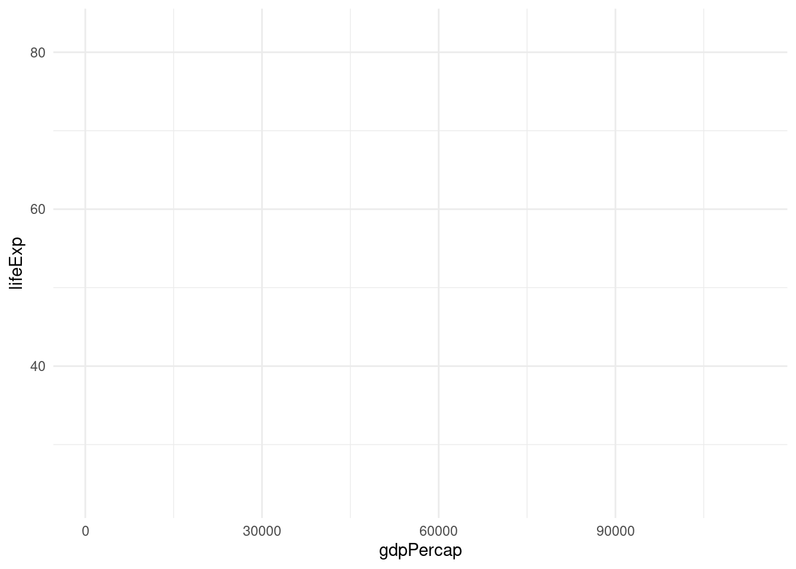
4.7.2 The grammar of graphics
-
the grammar of graphics
- data
- aesthetic attributes (color, shape, size)
- geometric objects (points, lines, bars)
- stats (summary stats)
- scales (map values in the data space)
- coord (data coordinates)
- facet (facetting specifications)
No worries about new terms. We’re going to learn them by actually plotting.
-
Workflow:
- Tidy data
- Mapping
- Geom
- Cor_ordinates and scales
- Labels and guides
- Themes
- Save files
4.7.3 mapping and geom
aes(aesthetic mappings or aesthetics) tells which variables (x, y) in your data should be represented by which visual elements (color, shape, size) in the plot.geom_tells the type of plot you are going to use
4.7.4 basic aes (x , y)
p <- ggplot(
data = gapminder,
mapping = aes(x = gdpPercap, y = lifeExp)
) # ggplot or R in general takes positional arguments too. So, you don't need to name data, mapping each time you use ggplot2.
p
p + geom_point()
p + geom_point() + geom_smooth() # geom_smooth has calculated a smoothed line;## `geom_smooth()` using method = 'gam' and formula = 'y ~ s(x, bs = "cs")'
# the shaded area is the standard error for the line4.7.5 Univariate distribution
-
geom_histogram(): For the probability distribution of a continuous variable. Bins divide the entire range of values into a series of intervals (see the Wiki entry). -
geom_density(): Also for the probability distribution of a continuous variable. It calculates a kernel density estimate of the underlying distribution.
4.7.5.1 Histogram
data(midwest) # load midwest dataset
midwest## # A tibble: 437 × 28
## PID county state area poptotal popdensity popwhite popblack popamerindian
## <int> <chr> <chr> <dbl> <int> <dbl> <int> <int> <int>
## 1 561 ADAMS IL 0.052 66090 1271. 63917 1702 98
## 2 562 ALEXAN… IL 0.014 10626 759 7054 3496 19
## 3 563 BOND IL 0.022 14991 681. 14477 429 35
## 4 564 BOONE IL 0.017 30806 1812. 29344 127 46
## 5 565 BROWN IL 0.018 5836 324. 5264 547 14
## 6 566 BUREAU IL 0.05 35688 714. 35157 50 65
## 7 567 CALHOUN IL 0.017 5322 313. 5298 1 8
## 8 568 CARROLL IL 0.027 16805 622. 16519 111 30
## 9 569 CASS IL 0.024 13437 560. 13384 16 8
## 10 570 CHAMPA… IL 0.058 173025 2983. 146506 16559 331
## # ℹ 427 more rows
## # ℹ 19 more variables: popasian <int>, popother <int>, percwhite <dbl>,
## # percblack <dbl>, percamerindan <dbl>, percasian <dbl>, percother <dbl>,
## # popadults <int>, perchsd <dbl>, percollege <dbl>, percprof <dbl>,
## # poppovertyknown <int>, percpovertyknown <dbl>, percbelowpoverty <dbl>,
## # percchildbelowpovert <dbl>, percadultpoverty <dbl>,
## # percelderlypoverty <dbl>, inmetro <int>, category <chr>
midwest %>%
ggplot(aes(x = area)) +
geom_point() # not working.
midwest %>%
ggplot(aes(x = area)) +
geom_histogram() # stat_bin argument picks up 30 bins (or "bucket") by default.## `stat_bin()` using `bins = 30`. Pick better value `binwidth`.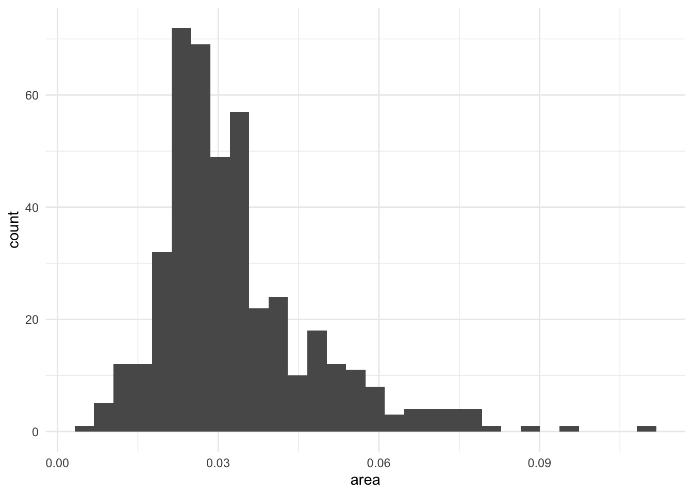
midwest %>%
ggplot(aes(x = area)) +
geom_histogram(bins = 10) # only 10 bins.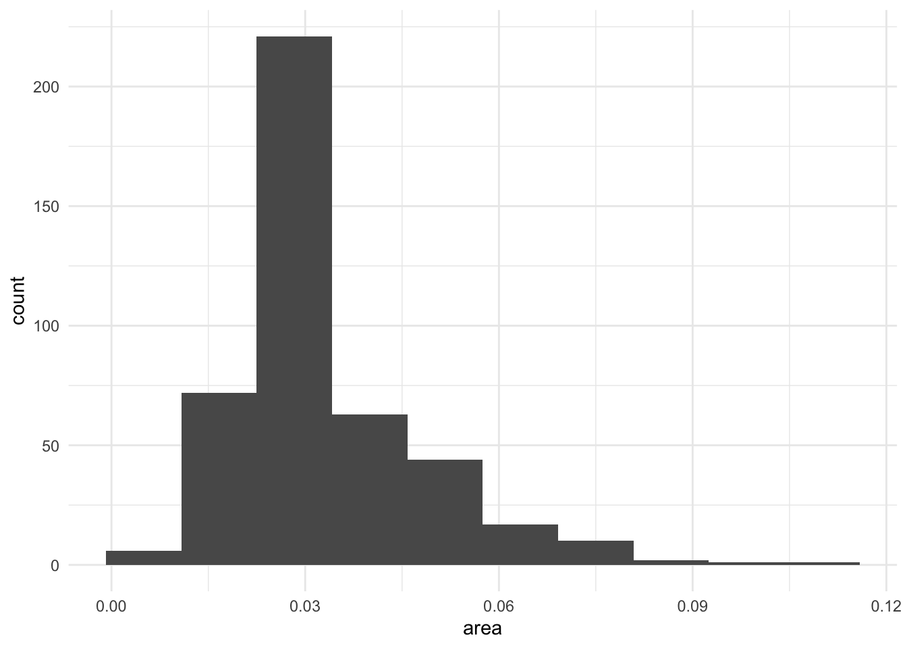
ggplot(
data = subset(midwest, state %in% c("OH", "IN")),
mapping = aes(x = percollege, fill = state)
) +
geom_histogram(alpha = 0.7, bins = 20) +
scale_fill_viridis_d()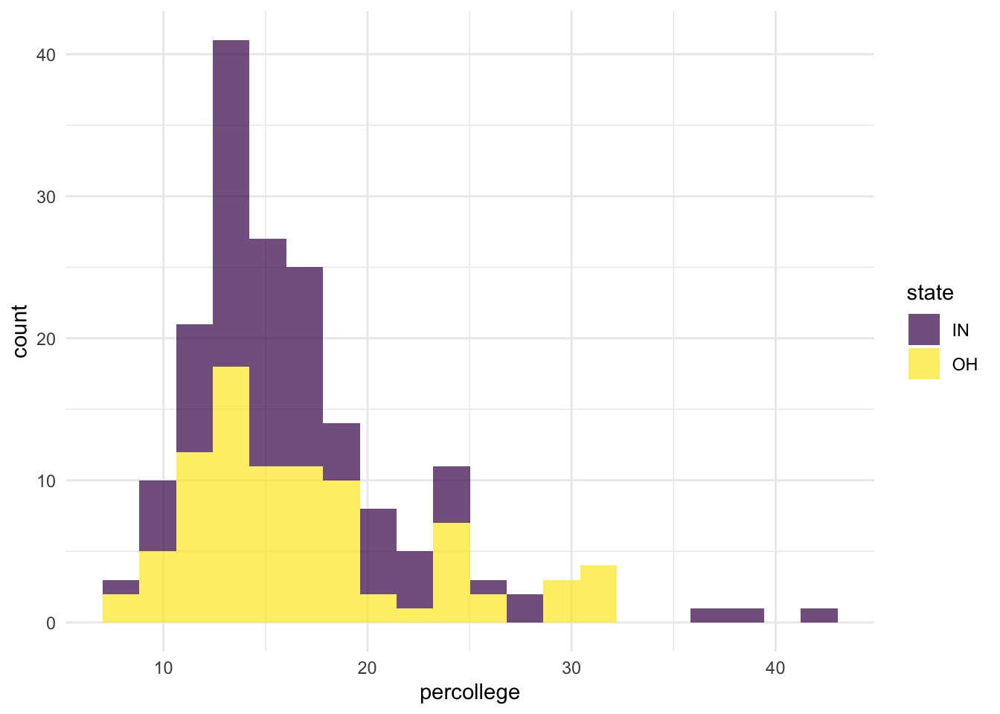
4.7.5.2 Density
midwest %>%
ggplot(aes(x = area, fill = state, color = state)) +
geom_density(alpha = 0.3) +
scale_color_viridis_d() +
scale_fill_viridis_d()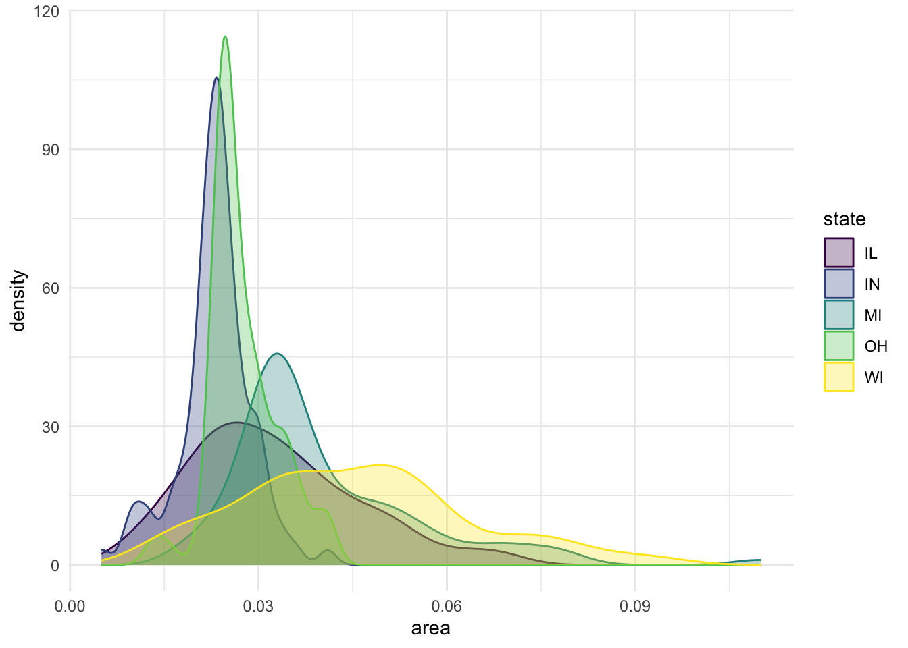
4.7.6 Advanced aes (size, color)
There’s also
fillargument (mostly used ingeom_bar()). Coloraesaffects the appearance of lines and points, fill is for the filled areas of bars, polygons, and in some cases, the interior of a smoother’s standard error ribbon.The property size/color/fill represents…
ggplot(
data = gapminder,
mapping = aes(
x = gdpPercap, y = lifeExp,
size = pop
)
) +
geom_point()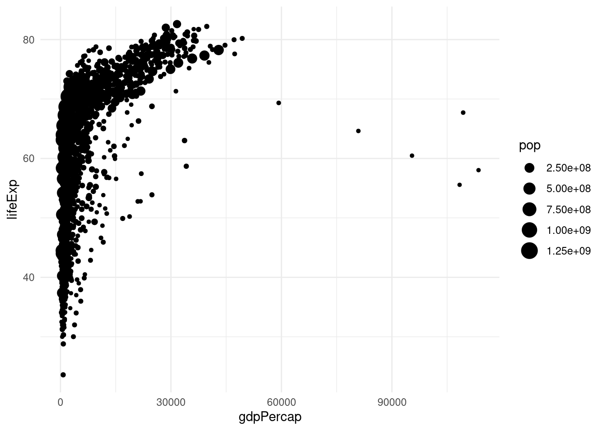
ggplot(
data = gapminder,
mapping = aes(
x = gdpPercap, y = lifeExp,
size = pop,
color = continent
)
) +
geom_point() +
scale_color_viridis_d()
# try red instead of "red"
ggplot(
data = gapminder,
mapping = aes(
x = gdpPercap, y = lifeExp,
size = pop,
color = "red"
)
) +
geom_point()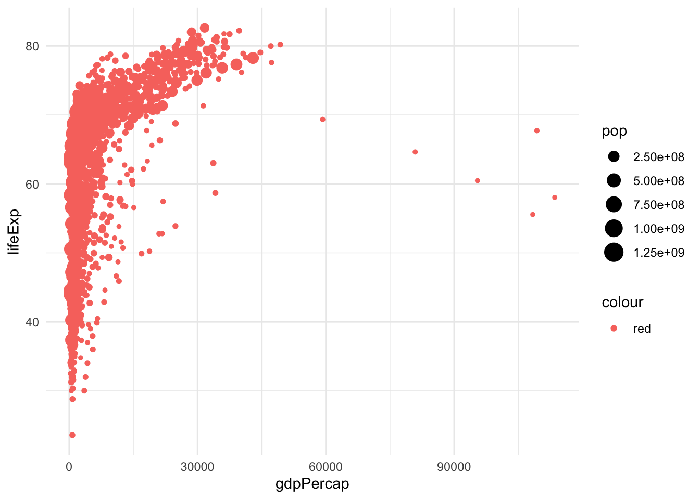
Aesthetics also can be mapped per Geom.
p + geom_point() +
geom_smooth()## `geom_smooth()` using method = 'gam' and formula = 'y ~ s(x, bs = "cs")'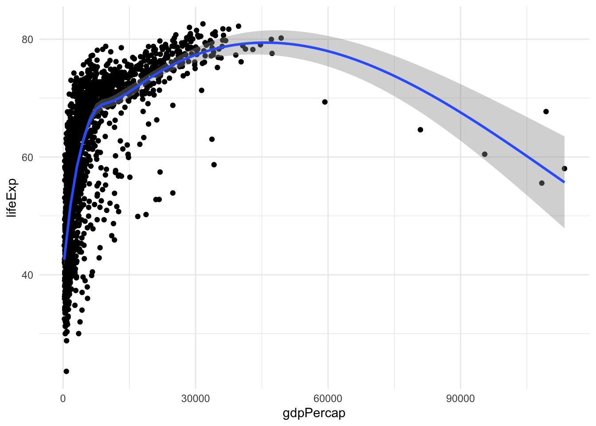
p + geom_point(alpha = 0.3) + # alpha controls transparency
geom_smooth(color = "red", se = FALSE, size = 2)## Warning: Using `size` aesthetic for lines was deprecated in ggplot2 3.4.0.
## ℹ Please use `linewidth` instead.
## This warning is displayed once per session.
## Call `lifecycle::last_lifecycle_warnings()` to see where this warning was
## generated.## `geom_smooth()` using method = 'gam' and formula = 'y ~ s(x, bs = "cs")'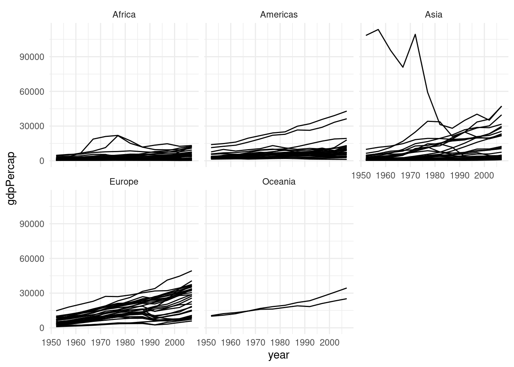
p + geom_point(alpha = 0.3) + # alpha controls transparency
geom_smooth(color = "red", se = FALSE, size = 2, method = "lm")## `geom_smooth()` using formula = 'y ~ x'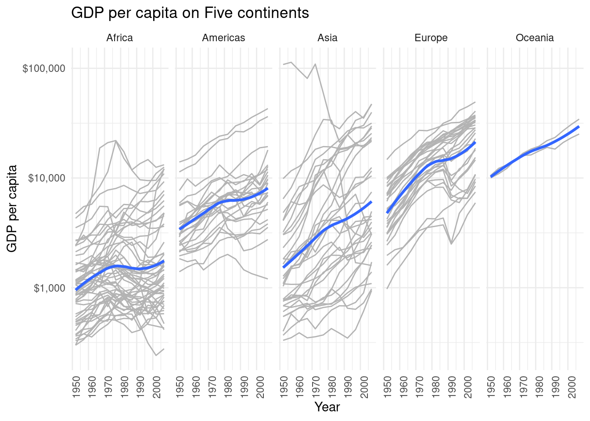
ggplot(
data = gapminder,
mapping = aes(
x = gdpPercap, y = lifeExp,
color = continent
)
) +
geom_point(alpha = 0.3) +
geom_smooth(method = "loess", color = "red") +
labs(
x = "log GDP",
y = "Life Expectancy",
title = "A Gapminder Plot",
subtitle = "Data points are country-years",
caption = "Source: Gapminder"
)## `geom_smooth()` using formula = 'y ~ x'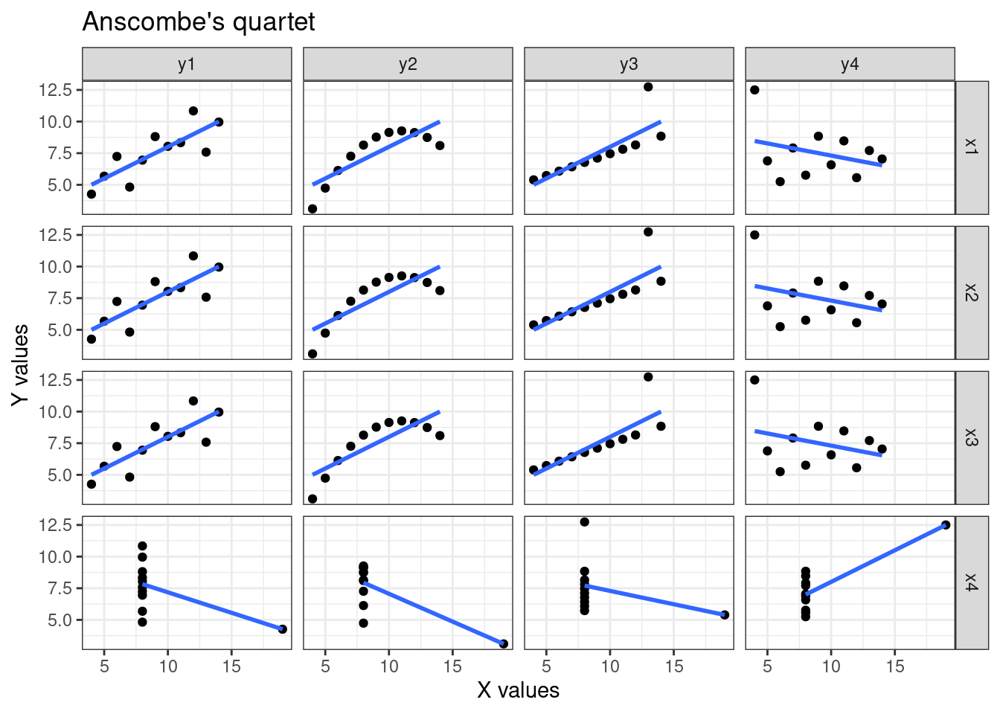
ggplot(
data = gapminder,
mapping = aes(
x = gdpPercap, y = lifeExp,
color = continent,
fill = continent
)
) +
geom_point(alpha = 0.3) +
geom_smooth(method = "loess", color = "red") +
labs(
x = "log GDP",
y = "Life Expectancy",
title = "A Gapminder Plot",
subtitle = "Data points are country-years",
caption = "Source: Gapminder"
) +
scale_color_viridis_d() +
scale_fill_viridis_d()## `geom_smooth()` using formula = 'y ~ x'
4.7.7 Co-ordinates and scales
p + geom_point() +
coord_flip() # coord_type
The data is heavily bunched up against the left side.
p + geom_point() # without scaling
p + geom_point() +
scale_x_log10() # scales the axis of a plot to a log 10 basis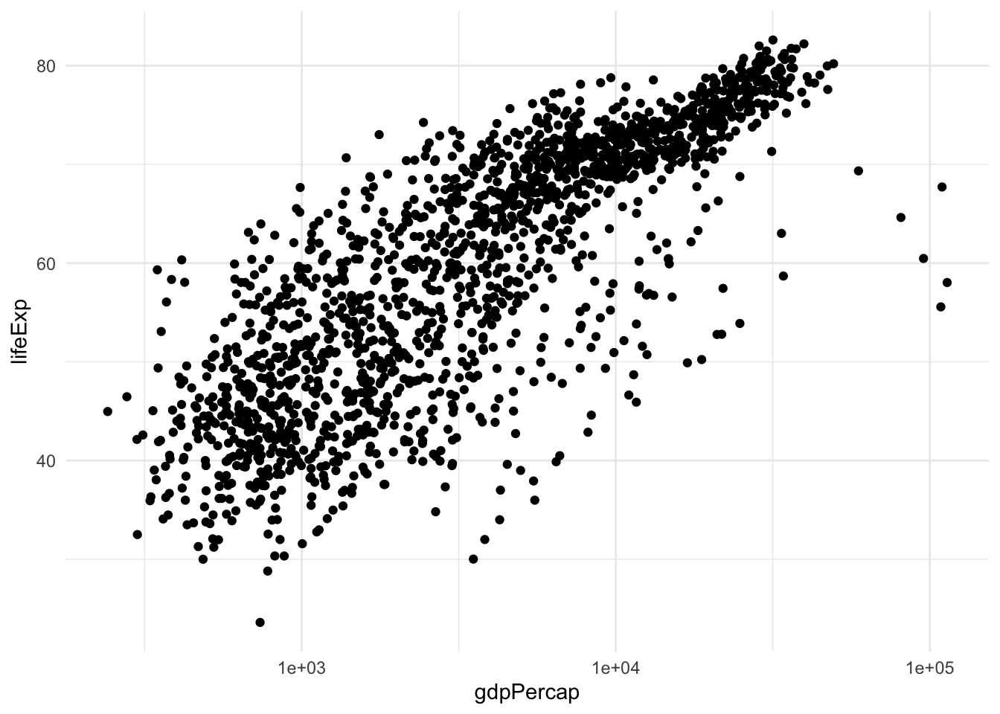
p + geom_point() +
geom_smooth(method = "lm") +
scale_x_log10()## `geom_smooth()` using formula = 'y ~ x'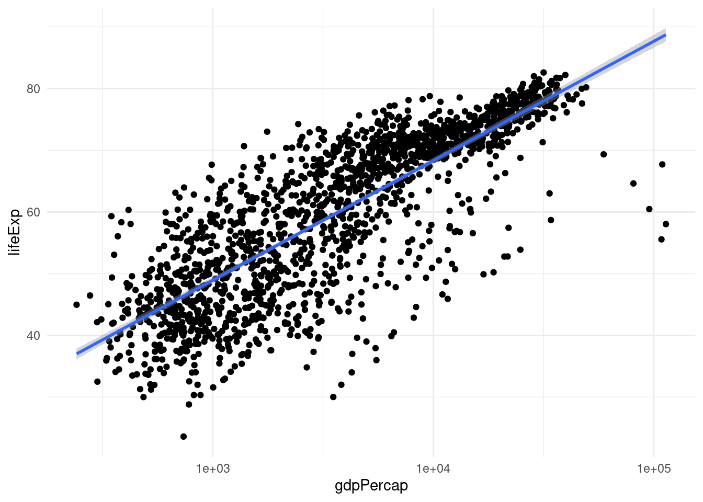
4.7.8 Labels and guides
scales package has some useful premade formatting functions. You can either load scales or just grab the function you need from the library using scales::
p + geom_point(alpha = 0.3) +
geom_smooth(method = "loess", color = "red") +
scale_x_log10(labels = scales::dollar) +
labs(
x = "log GDP",
y = "Life Expectancy",
title = "A Gapminder Plot",
subtitle = "Data points are country-years",
caption = "Source: Gapminder"
)## `geom_smooth()` using formula = 'y ~ x'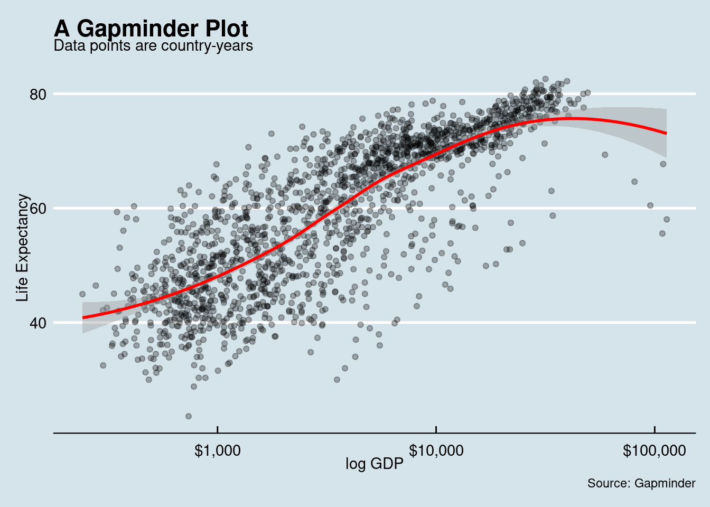
- Themes
p + geom_point(alpha = 0.3) +
geom_smooth(method = "loess", color = "red") +
scale_x_log10(labels = scales::dollar) +
labs(
x = "log GDP",
y = "Life Expectancy",
title = "A Gapminder Plot",
subtitle = "Data points are country-years",
caption = "Source: Gapminder"
) +
theme_economist()## `geom_smooth()` using formula = 'y ~ x'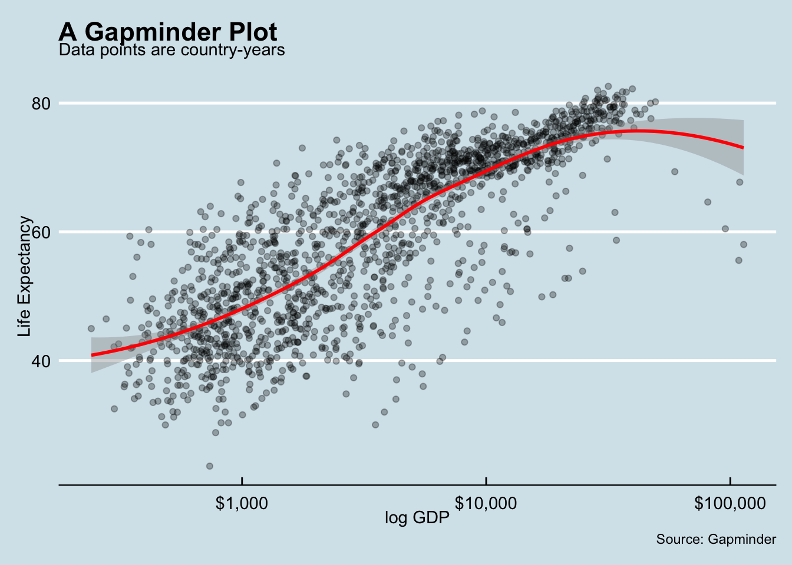
4.7.9 ggsave
figure_example <- p + geom_point(alpha = 0.3) +
geom_smooth(method = "gam", color = "red") +
scale_x_log10(labels = scales::dollar) +
labs(
x = "log GDP",
y = "Life Expectancy",
title = "A Gapminder Plot",
subtitle = "Data points are country-years",
caption = "Source: Gapminder"
) +
theme_economist()
ggsave(figure_example, here("outputs", "figure_example.png"))4.7.10 Many plots
Basic ideas:
- Grouping: tell
ggplot2about the structure of your data - Facetting: break up your data into pieces for a plot
4.7.10.1 Grouping
- Can you guess what’s wrong?
p <- ggplot(gapminder, aes(x = year, y = gdpPercap))
p + geom_point()
p + geom_line()
geom_line joins up all the lines for each particular year in the order they appear in the dataset. ggplot2 does not know the yearly observations in your data are grouped by country.
You need grouping when the grouping information you need to tell is not built into the mapped variables (like continent).
gapminder## # A tibble: 1,704 × 6
## country continent year lifeExp pop gdpPercap
## <fct> <fct> <int> <dbl> <int> <dbl>
## 1 Afghanistan Asia 1952 28.8 8425333 779.
## 2 Afghanistan Asia 1957 30.3 9240934 821.
## 3 Afghanistan Asia 1962 32.0 10267083 853.
## 4 Afghanistan Asia 1967 34.0 11537966 836.
## 5 Afghanistan Asia 1972 36.1 13079460 740.
## 6 Afghanistan Asia 1977 38.4 14880372 786.
## 7 Afghanistan Asia 1982 39.9 12881816 978.
## 8 Afghanistan Asia 1987 40.8 13867957 852.
## 9 Afghanistan Asia 1992 41.7 16317921 649.
## 10 Afghanistan Asia 1997 41.8 22227415 635.
## # ℹ 1,694 more rows4.7.10.2 Facetting
Facetting is to make small multiples.
facet_wrap: based on a single categorical variable likefacet_wrap(~single_categorical_variable). Your panels will be laid out in order and then wrapped into a grid.facet_grid: when you want to cross-classify some data by two categorical variables likefacet_grid(one_cat_variable ~ two_cat_variable).
p <- ggplot(gapminder, aes(x = year, y = gdpPercap))
p + geom_line(aes(group = country)) # group by, # The outlier is Kuwait.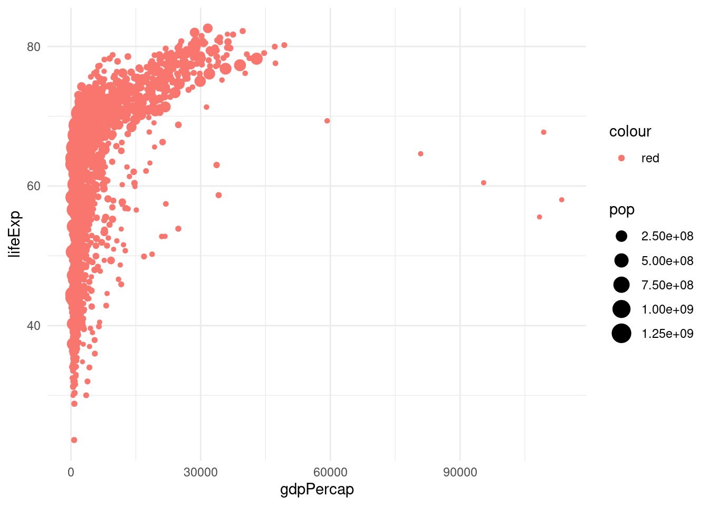
p + geom_line(aes(group = country)) + facet_wrap(~continent) # facetting
p + geom_line(aes(group = country), color = "gray70") +
geom_smooth(size = 1.1, method = "loess", se = FALSE) +
scale_y_log10(labels = scales::dollar) +
facet_wrap(~continent, ncol = 5) + # for single categorical variable; for multiple categorical variables use facet_grid()
labs(
x = "Year",
y = "GDP per capita",
title = "GDP per capita on Five continents"
) +
theme(axis.text.x = element_text(angle = 90, hjust = 1))## `geom_smooth()` using formula = 'y ~ x'
p + geom_line(aes(group = country), color = "gray70") +
geom_smooth(size = 1.1, method = "loess", se = FALSE) +
scale_y_log10(labels = scales::dollar) +
facet_grid(~continent) + # for single categorical variable; for multiple categorical variables use facet_grid()
labs(
x = "Year",
y = "GDP per capita",
title = "GDP per capita on Five continents"
) +
theme(axis.text.x = element_text(angle = 90, hjust = 1))## `geom_smooth()` using formula = 'y ~ x'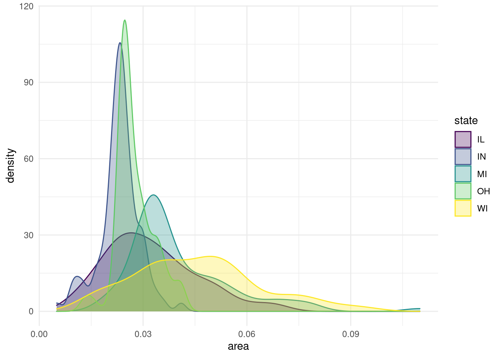
4.7.11 Transforming
- Transforming: perform some calculations on or summarize your data before producing the plot
4.7.11.1 Use pipes to summarize data
Also, we experiment with bar charts here. By default, geom_bar uses stat = “bins”, which makes the height of each bar equal to the number of cases in each group. If you have a y column, then you should use stat = "identity" argument. Alternatively, you can use geom_col().
gapminder_formatted <- gapminder %>%
group_by(continent, year) %>%
summarize(
gdp_mean = mean(gdpPercap),
lifeExp_mean = mean(lifeExp)
)## `summarise()` has grouped output by 'continent'. You can override using the
## `.groups` argument.
ggplot(data = gapminder_formatted, aes(x = year, y = lifeExp_mean, color = continent)) +
geom_point() +
labs(
x = "Year",
y = "Life expectancy",
title = "Life expectancy on Five continents"
)
gapminder %>%
dplyr::filter(continent == "Europe") %>%
group_by(country, year) %>%
summarize(
gdp_mean = mean(gdpPercap),
lifeExp_mean = mean(lifeExp)
) %>%
ggplot(aes(x = year, y = lifeExp_mean, color = country)) +
geom_point() +
labs(
x = "Year",
y = "Life expectancy",
title = "Life expectancy in Europe"
)## `summarise()` has grouped output by 'country'. You can override using the
## `.groups` argument.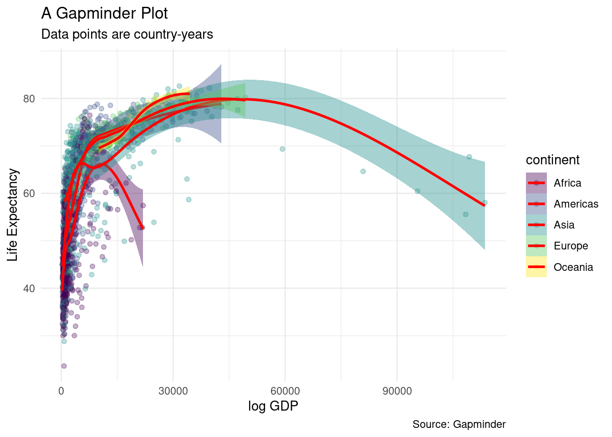
# geom point
gapminder %>%
dplyr::filter(continent == "Europe") %>%
group_by(country, year) %>%
summarize(
gdp_mean = mean(gdpPercap),
lifeExp_mean = mean(lifeExp)
) %>%
ggplot(aes(x = year, y = lifeExp_mean)) +
geom_point() +
labs(
x = "Year",
y = "Life expectancy",
title = "Life expectancy in Europe"
) +
facet_wrap(~country)## `summarise()` has grouped output by 'country'. You can override using the
## `.groups` argument.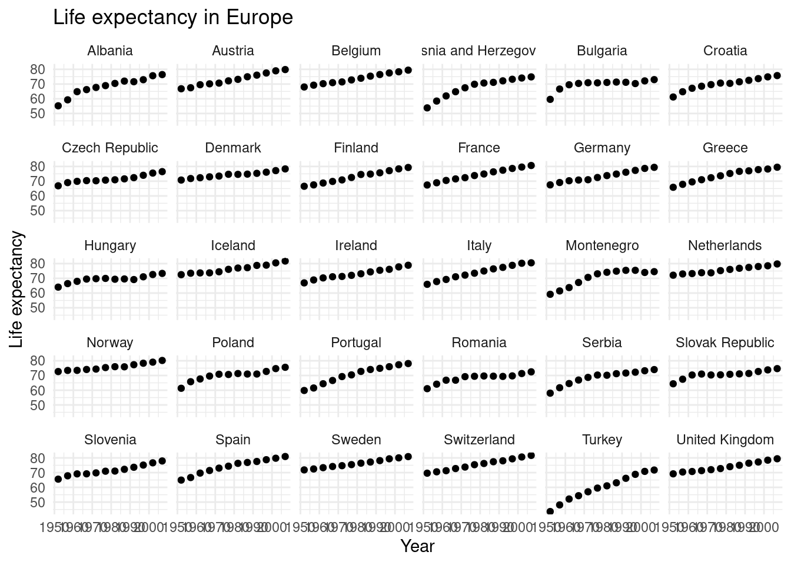
# geom bar
gapminder %>%
dplyr::filter(continent == "Europe") %>%
group_by(country, year) %>%
summarize(
gdp_mean = mean(gdpPercap),
lifeExp_mean = mean(lifeExp)
) %>%
ggplot(aes(x = year, y = lifeExp_mean)) +
geom_bar(stat = "identity") +
labs(
x = "Year",
y = "Life expectancy",
title = "Life expectancy in Europe"
) +
facet_wrap(~country)## `summarise()` has grouped output by 'country'. You can override using the
## `.groups` argument.
# no facet
gapminder %>%
dplyr::filter(continent == "Europe") %>%
group_by(country, year) %>%
summarize(
gdp_mean = mean(gdpPercap),
lifeExp_mean = mean(lifeExp)
) %>%
ggplot(aes(x = year, y = lifeExp_mean, fill = country)) +
geom_bar(stat = "identity") + # even if you not stack, still the plot looks messy or you can use geom_col()
labs(
x = "Year",
y = "Life expectancy",
title = "Life expectancy in Europe"
)## `summarise()` has grouped output by 'country'. You can override using the
## `.groups` argument.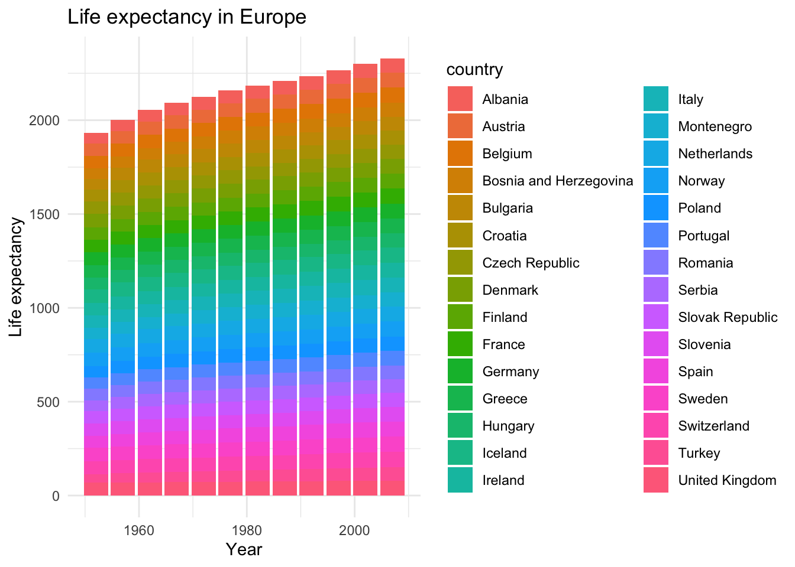
gapminder %>%
dplyr::filter(continent == "Europe") %>%
group_by(country, year) %>%
summarize(
gdp_mean = mean(gdpPercap),
lifeExp_mean = mean(lifeExp)
) %>%
ggplot(aes(x = country, y = lifeExp_mean)) +
geom_boxplot() +
labs(
x = "Country",
y = "Life expectancy",
title = "Life expectancy in Europe"
) +
coord_flip()## `summarise()` has grouped output by 'country'. You can override using the
## `.groups` argument.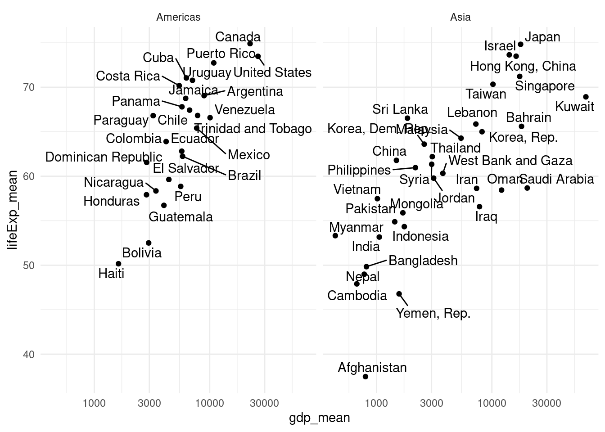
# without ordering
gapminder %>%
dplyr::filter(continent == "Europe") %>%
group_by(country, year) %>%
summarize(
gdp_mean = mean(gdpPercap),
lifeExp_mean = mean(lifeExp)
) %>%
ggplot(aes(x = reorder(country, lifeExp_mean), y = lifeExp_mean)) +
geom_boxplot() +
labs(
x = "Country",
y = "Life expectancy",
title = "Life expectancy in Europe"
) +
coord_flip()## `summarise()` has grouped output by 'country'. You can override using the
## `.groups` argument.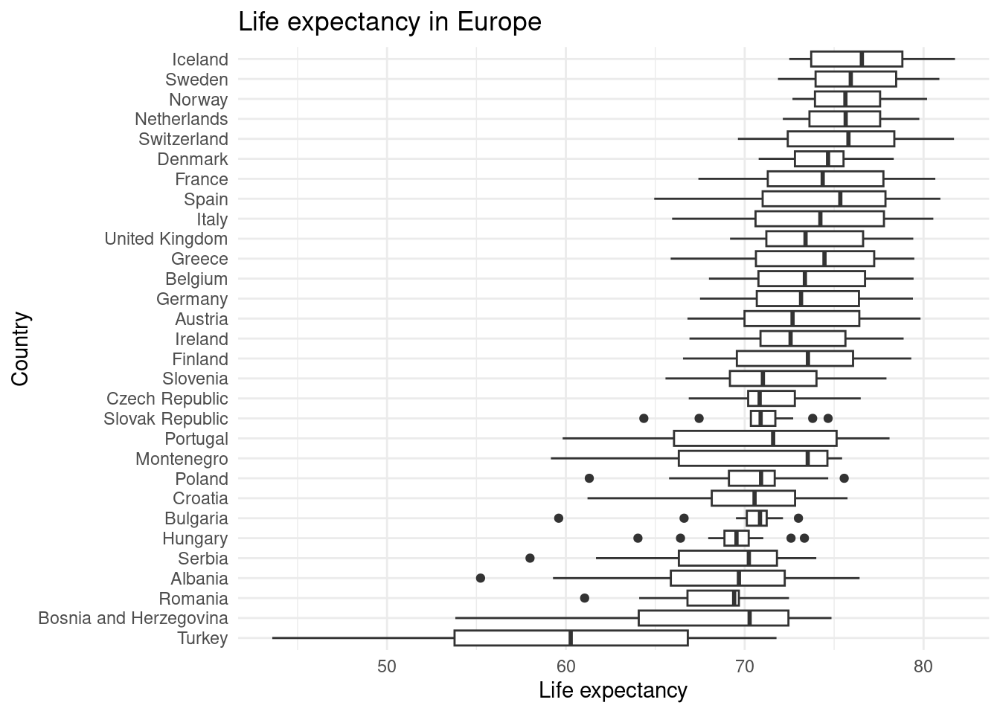
# reorder
gapminder %>%
dplyr::filter(continent == "Europe") %>%
group_by(country, year) %>%
summarize(
gdp_mean = mean(gdpPercap),
lifeExp_mean = mean(lifeExp)
) %>%
ggplot(aes(x = reorder(country, -lifeExp_mean), y = lifeExp_mean)) +
geom_boxplot() +
labs(
x = "Country",
y = "Life expectancy",
title = "Life expectancy in Europe"
) +
coord_flip()## `summarise()` has grouped output by 'country'. You can override using the
## `.groups` argument.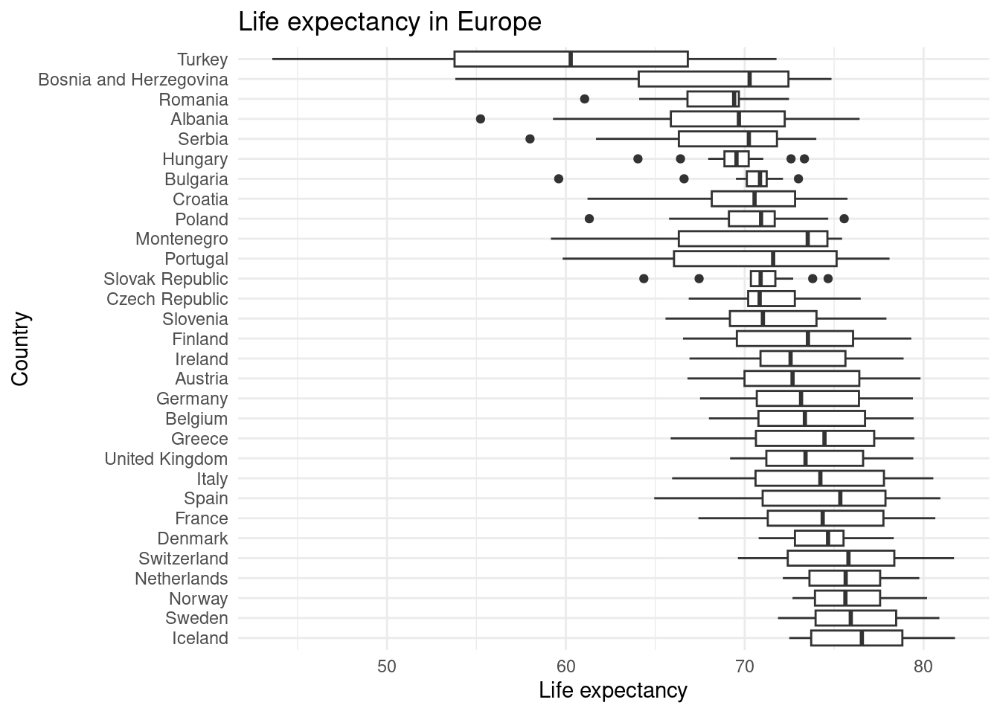
4.7.11.2 Plotting text
gapminder %>%
dplyr::filter(continent == "Asia" | continent == "Americas") %>%
group_by(continent, country) %>%
summarize(
gdp_mean = mean(gdpPercap),
lifeExp_mean = mean(lifeExp)
) %>%
ggplot(aes(x = gdp_mean, y = lifeExp_mean)) +
geom_point() +
geom_text(aes(label = country)) +
scale_x_log10() +
facet_grid(~continent)## `summarise()` has grouped output by 'continent'. You can override using the
## `.groups` argument.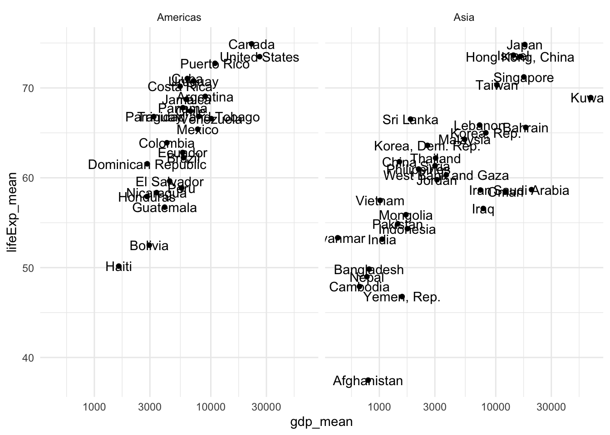
# with label
gapminder %>%
dplyr::filter(continent == "Asia" | continent == "Americas") %>%
group_by(continent, country) %>%
summarize(
gdp_mean = mean(gdpPercap),
lifeExp_mean = mean(lifeExp)
) %>%
ggplot(aes(x = gdp_mean, y = lifeExp_mean)) +
geom_point() +
geom_label(aes(label = country)) +
scale_x_log10() +
facet_grid(~continent)## `summarise()` has grouped output by 'continent'. You can override using the
## `.groups` argument.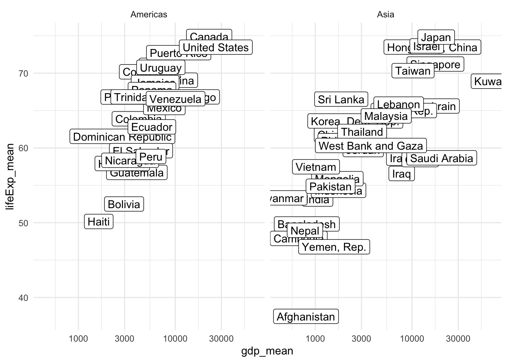
# no overlaps
gapminder %>%
dplyr::filter(continent == "Asia" | continent == "Americas") %>%
group_by(continent, country) %>%
summarize(
gdp_mean = mean(gdpPercap),
lifeExp_mean = mean(lifeExp)
) %>%
ggplot(aes(x = gdp_mean, y = lifeExp_mean)) +
geom_point() +
geom_text_repel(aes(label = country)) + # there's also geom_label_repel
scale_x_log10() +
facet_grid(~continent)## `summarise()` has grouped output by 'continent'. You can override using the
## `.groups` argument.## Warning: ggrepel: 2 unlabeled data points (too many overlaps). Consider
## increasing max.overlaps## Warning: ggrepel: 1 unlabeled data points (too many overlaps). Consider
## increasing max.overlaps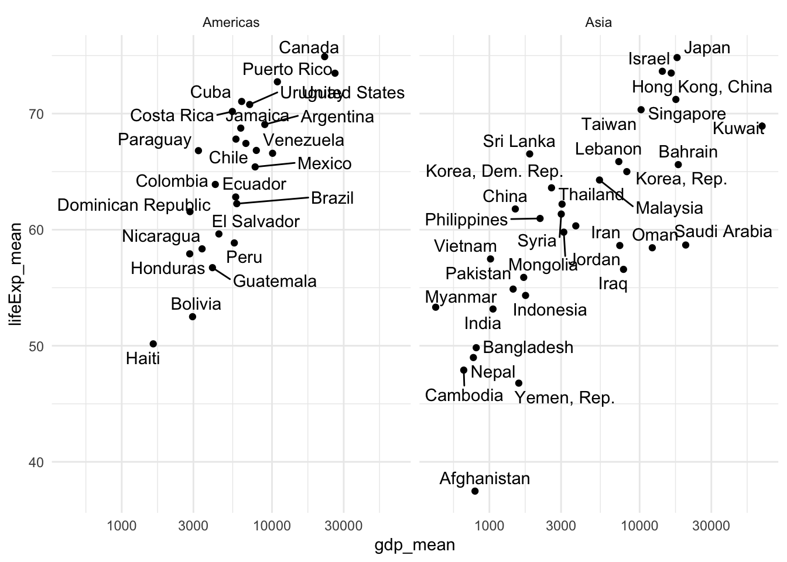
4.7.12 Ploting models
In plotting models, we extensively use David Robinson’s broom package in R. The idea is to transform model outputs (i.e., predictions and estimations) into tidy objects so that we can easily combine, separate, and visualize these elements.
4.7.12.1 Plotting several fits at the same time
model_colors <- RColorBrewer::brewer.pal(3, "Set1") # select three qualitatively different colors from a larger palette.
gapminder %>%
ggplot(aes(x = log(gdpPercap), y = lifeExp)) +
geom_point(alpha = 0.2) +
geom_smooth(method = "lm", aes(color = "OLS", fill = "OLS")) +
geom_smooth(
method = "lm", formula = y ~ splines::bs(x, df = 3),
aes(color = "Cubic Spline", fill = "Cubic Spline")
) +
geom_smooth(method = "loess", aes(color = "LOESS", fill = "LOESS")) +
theme(legend.position = "top") +
scale_color_manual(name = "Models", values = model_colors) +
scale_fill_manual(name = "Models", values = model_colors)## `geom_smooth()` using formula = 'y ~ x'
## `geom_smooth()` using formula = 'y ~ x'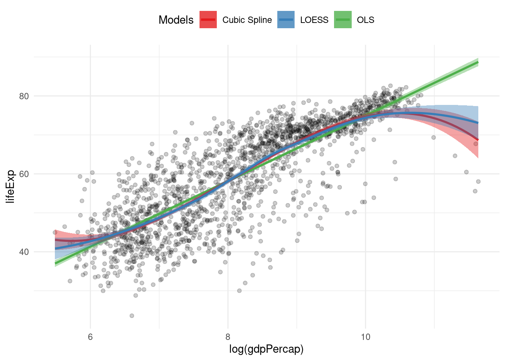
4.7.12.2 Extracting model outcomes
# regression model
out <- lm(
formula = lifeExp ~ gdpPercap + pop + continent,
data = gapminder
)tidy() is a method in the broom package. It “constructs a dataframe that summarizes the model’s statistical findings”. As the description states, tidy is a function that can be used for various models. For instance, a tidy can extract the following information from a regression model.
-
Term: a term being estimated p.value-
statistic: a test statistic used to compute p-value estimate-
conf.low: the low end of a confidence interval -
conf.high: the high end of a confidence interval -
df: degrees of freedom
Challenge
Try glance(out); what did you get from these commands? If you’re curious, you can try ?glance.
The followings are to show your degree of confidence.
4.7.12.2.1 Coefficients
# estimates
out_comp <- tidy(out)
p <- out_comp %>%
ggplot(aes(x = term, y = estimate))
p + geom_point() +
coord_flip() +
theme_bw()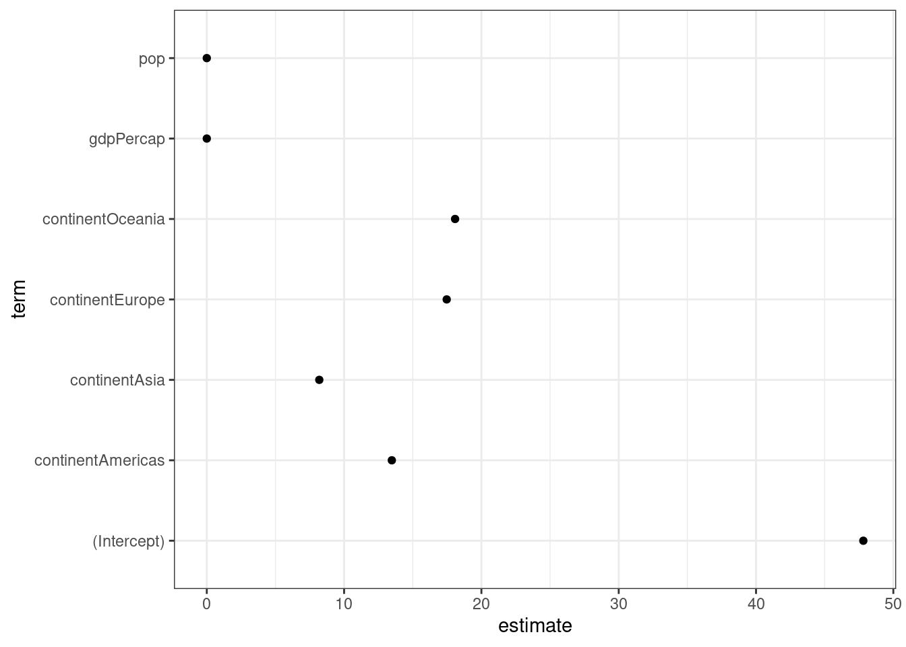
4.7.12.2.2 Confidence intervals
# plus confidence intervals
out_conf <- tidy(out, conf.int = TRUE)
# plotting coefficients using ggplot2 (pointrange)
out_conf %>%
ggplot(aes(x = reorder(term, estimate), y = estimate, ymin = conf.low, ymax = conf.high)) +
geom_pointrange() +
coord_flip() +
labs(x = "", y = "OLS Estimate") +
theme_bw()
# another way to do it (errorbar)
out_conf %>%
ggplot(aes(x = estimate, y = reorder(term, estimate))) +
geom_point() +
geom_errorbarh(aes(xmin = conf.low, xmax = conf.high)) +
labs(y = "", x = "OLS Estimate") +
theme_bw()## Warning: `geom_errorbarh()` was deprecated in ggplot2 4.0.0.
## ℹ Please use the `orientation` argument of `geom_errorbar()` instead.
## This warning is displayed once per session.
## Call `lifecycle::last_lifecycle_warnings()` to see where this warning was
## generated.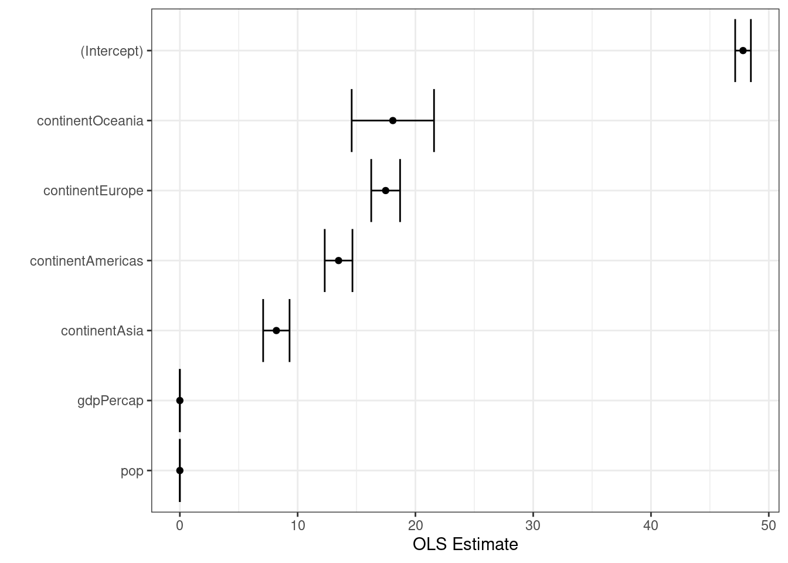
You can also calculate marginal effects using the marginaleffects package.